扉页

版权页
京权图字 01-2006-3303
Originally published by Oxford University Press, Great Clarendon Street, Oxford. © 2000
This edition is licensed for sale in the People's Republic of China only and not for export therefrom.
'Oxford' is a registered trademark of Oxford University Press.
只限中华人民共和国境内销售，不包括香港特别行政区、澳门特别行政区及台湾省。不得出口。
图书在版编目（CIP）数据
吉姆老爷 = Lord Jim／（英）康拉德（Conrad, J.）著；（英）韦斯特（West, C.）改写；张蘅译.—北京：外语教学与研究出版社，2007.7（2015.6 重印）
（书虫·牛津英汉双语读物）
ISBN 978-7-5600-6814-5
Ⅰ．吉… Ⅱ．①康…②韦…③张… Ⅲ．①英语—语言读物②长篇小说—英国—近代 Ⅳ．H319.4：I
中国版本图书馆CIP数据核字（2007）第104930号
出版人： 蔡剑峰
责任编辑：周 晶
封面设计：孙莉明
出版发行：外语教学与研究出版社
社 址：北京市西三环北路19号（100089）
网 址：http://www.fltrp.com
版 次：2007年7月第1版
书 号：ISBN 978-7-5600-6814-5
* * *
凡侵权、盗版书籍线索，请联系我社法律事务部
举报电话：（010）88817519
电子邮箱：banquan@fltrp.com
法律顾问：立方律师事务所 刘旭东律师
中咨律师事务所 殷 斌律师
内容简介
内容简介
吉姆离开英格兰开始了水手生涯，他快乐地憧憬着等待他的海上新生活。他认为自己是个勇敢、尽责的人，就像他小时候读过的航海故事中的主人公一样，时刻准备着迎接将要到来的危险。
但当危险真正来临时，吉姆却没有准备好。他是“帕特纳号”的大副，这艘旧船载着800名乘客在横渡印度洋时遇险了。这正是勇者应当挺身而出的时候，但吉姆却没能表现得像他梦想中的英雄那样。很快，“懦夫”这个词在东方所有的海港传开了。
只有一个人相信吉姆。这个人是马洛，他试着帮助吉姆找到新的生活，后来，他把这段故事讲给朋友们听。故事讲述了吉姆找寻失去的荣誉的过程——通向灵魂阴暗处的心路历程，在那里，梦想和恐惧就像掠过月亮表面的阴影……
LORD JIM
LORD JIM
When Jim leaves England to begin his life as a sailor, he dreams happily of the adventures waiting for him at sea. He sees himself as the brave man who always does his duty, just like the heroes in the sea stories he read as a boy. When danger comes, he will be ready for it.
But danger does come, and Jim is not ready for it. He is the first mate on board the Patna, an old ship taking 800 passengers across the Indian Ocean. When the accident happens and it is time for a brave man to do his duty, Jim fails to act like the hero of his dreams. Soon, the word 'coward' is whispered around all the sea ports of the Eastern seas.
Only one man believes in Jim. Marlow tries to help him find a new life, and in later years he tells the story to his friends. It is the story of Jim's search for his lost honour—a journey into the dark places of the soul, where dreams and fears move like shadows across the face of the moon...
目录
1．Jim's early life
1
Jim's early life
In the Eastern ports where he worked for most of his life, Jim was very popular. He was an excellent seaman, who was liked and trusted by everyone. He was tall and strongly built, with a deep voice and a confident way of talking. To his employers and the ship captains, he was just Jim, nothing more. He had a special reason for not wanting people to know his other name. But nothing remains secret for long in sea ports, and soon someone who knew about his past was certain to arrive. When this happened, Jim always left his well-paid job immediately, and moved on to another port. Over several years he was known first in Bombay, then Calcutta, then Rangoon, Penang and Jakarta, as he moved towards the rising sun. Finally, when he could no longer bear this kind of life, he ran away from sea ports and white men for ever, hiding himself in the jungle, in a distant Malaysian village, far away from anyone who knew him. The natives of the village gave him an extra name. They called him Tuan Jim, or, as we would say, Lord Jim.
Jim had spent his childhood in a comfortable, peaceful home in the southwest of England. His father was a vicar, a kind man who always did his duty, and who had no doubts about what was right or wrong. The family house was warm and welcoming, with plenty of room for Jim and his four older brothers to play in. Close to it, on a hill, was the small grey church, standing, like a rock, where it had stood for centuries. There had been vicars in Jim's family for a hunderd years, but one of his brothers had already shown an interest in the Church, so his father had to find some other work for his youngest son. When Jim spent a whole summer reading sea stories, his father was delighted, and decided that Jim would join the merchant navy at once.
He was sent to a training ship on a busy, wide river near London; there two hundred boys slept, ate and worked together, learning everything a sailor needs to know. Because he was strong, and quick, and intelligent, he learnt fast, and was generally liked. The work seemed easy to him, and he was confident of his bravery in any danger. Sometimes at night he used to forget the crowd of noisy boys around him, and escape into his own dream world of sea stories. He saw himself swimming bravely through the waves to save passengers from sinking ships, fighting natives on lonely islands, and giving orders to frightened sailors to save their lives. He was always the brave man who did his duty, just like the heroes in the stories that he had read at home.
One evening he heard a sudden shout, 'Something's happened! On deck, all of you! Hurry!' He jumped to his feet, and joined the other boys as they ran up on to the deck.
It was a dark and stormy night. The wind was blowing strongly and heavy rain was falling. Jim stood without moving, staring at the cruel black waves. Was it him that the storm wanted? What would it be like, to fall into that cold water and drown?
'Send the lifeboat out!' came the order. In the darkness two small ships had crashed into each other, and there were distant voices crying for help. Boys ran past Jim, who still did not move. They jumped into the lifeboat and began to row as fast as they could towards the two damaged ships.
'Row together, you young dogs!' shouted a voice from the boat, 'if you want to save any lives!'
Jim had now run to the side of the ship and was looking down. He felt a hand on his shoulder. 'Too late, young man,' said the captain. Jim looked up, disappointed. The captain smiled. 'Better luck next time,' he said. 'This will teach you to move quickly in an emergency.'
The lifeboat came dancing back through the waves, half full of water. The boys had saved two men, who now lay exhausted in the bottom of the boat. Jim no longer felt afraid of the sea. It seemed to him that he cared nothing for the storm. He would live through greater dangers than that, and would show the world how brave he was. That night he sat alone, while the boys who had saved the two men's lives told their excited friends the whole story. When they described the waves, and the cold, and the sinking ships, Jim felt angry. They were so proud of what they had done! He, too, had wanted to show his bravery. But perhaps it was better this way. He had learnt more from this experience than any of them. The next time a brave man was needed, he alone, he felt sure, would know how to fight the wind and the seas. And as the other boys talked and laughed together, Jim dreamed happily of the next adventure and his chance to prove himself.
After two years of training, he went to sea. He made many voyages on many different ships, but surprisingly there were no adventures. The sea had not yet tested him, or shown him the secret truth of his pretences. However, although he was still very young, he soon became chief mate of a fine ship. Unfortunately, he was badly hurt during a storm at sea, and when the ship reached an Eastern port, he was taken to hospital. His broken leg needed time to mend, and so he was left behind when his ship sailed away.
Time passed slowly in the hospital, where the patients played cards, and slept, and told each other stories. There were brightly coloured flowers in the gardens, and warm, soft air blew in through the open windows. The hospital was on a hill, and had an excellent view of the port, which was always busy, as it was on one of the main sea routes to the East. Jim felt wonderfully calm as he looked out every day at the ships like toys in the sea, with the endless blue of the Eastern sky above, and the smiling peace of the Eastern seas all around.
As soon as he could walk, he left the hospital and started looking for a ship to take him back to England. While waiting, he naturally spent time with other European seamen in the port. Many of them had become lazy. They were used to the easy life of a white sailor in the East, and did not want to return to the bad weather, harder conditions and more dangerous duties of the West. They talked, not of work, but of luck, and chance, and money. At first, Jim refused to listen to them. But soon he began to find these men strangely interesting. How did they make a success of their lives, with so little work and so little danger? And suddenly, he decided not to go home to England, and took a job as chief mate of the Patna.
The Patna was a local ship, as old as the hills, and in very bad condition. Her captain was a German whose home was in Australia, a very large, fat, cruel man, who felt that he owed no duty to anybody. He had arranged to take eight hundred pilgrims to the city of Mecca in Saudi Arabia.
Jim watched as the native people hurried on to the ship, filling every corner like water in a container. Eight hundred men and women had come from north and south, from islands and villages, over mountains and down rivers. At the call of an idea they had left their forests, their farms, their homes—strong men, young boys, little girls, women with heads covered, and sleeping babies. 'Look at these animals,' said the German captain to his new chief mate.
The Patna left the port, and started across the Indian Ocean towards the Red Sea. The five white seamen lived separately from the pilgrims, who were packed close together on every deck and in every corner. The days were hot and heavy, and the ship moved slowly across a flat, lifeless sea. There were no clouds in the burning sky, and it was too hot to think or feel.
The nights were beautiful. A wonderful calm seemed to cover the world, and the young moon shone down on the smooth, cool sea. Jim thought that there was nothing but peace and happiness in nature, as he breathed in the soft air, while in all the dark corners around him the pilgrims slept, trusting the white men to keep them safe.
Two Malays stood silently at the wheel. Jim walked along the deck, and looked at the dark water. He did not see the shadow of what was to come. In fact, he felt that nothing could hurt him on a night like this. He had been responsible for the ship for several hours now, and he was feeling sleepy.
'Anything to report?' The captain had come up noiselessly behind him. His face was red, with one eye half closed, the other staring and glassy. His fat body shook when he walked, and his clothes were dirty and unbuttoned. Jim answered his captain politely, but moved a little away from the ugly figure who had destroyed the night's peace.
The ship continued to move smoothly over the flat sea. 'You can't imagine how hot it is down below,' said a voice. It was the young second engineer, who had come up on deck for some fresh air. He did not seem able to speak clearly. 'Why I work on this old ship, I don't know,' he went on. 'We engineers work twice as hard as you sailors, and—'
'Don't speak to me like that, you dog!' shouted the captain. 'Where did you get your drink?'
'Not from you, captain!' laughed the engineer. 'You're too mean for that! No, the good old chief gave me some.'
The chief engineer was a well-known drinker, who normally kept his drink to himself. Tonight, however, he had given some to the second engineer, who was not used to it. The chief and the captain had worked together on many ships, and people in the Patna's home port said that they had been guilty of every crime you could think of, at one time or another.
Jim watched the captain getting angrier and angrier, and the young man shouting louder and louder. He smiled to himself. These men did not belong to the world of adventure. They had nothing to do with him. He was almost asleep on his feet.
Suddenly the engineer was thrown forward on to his face, and lay silent on the deck. Jim and the captain stared at the calm sea, and looked up at the stars. What had happened? They could still hear the engines turning. Had the earth stopped? Now the cloudless sky and the quiet sea looked less safe than before. 'What was that?' cried the engineer, holding his arm in pain. There was a noise like distant thunder, and the ship trembled. The two Malays at the wheel looked at the white men, but received no orders, so did not move. The Patna lifted a little in the water, and then continued smoothly on her way.
trust v. to feel sure that someone is good and honest; to believe in someone 信任。
jungle n. an area of land with dense forest and tangled vegetation, typically in the tropics 热带丛林。
vicar n. a priest in the Church of England who is in charge of a church in a particular area （英国国教的）教区牧师。
welcoming adj. pleasing; a place that makes you happy and relaxed （地方）令人愉悦的。
merchant navy ships (and the sailors who work on them) that carry goods from country to country 商船队。
deck n. any of the floors of a ship 甲板。
row v. to propel (a boat) with oars 划船。
emergency n. a serious, unexpected, and potentially dangerous situation requiring immediate action 紧急情况；不测事件。
live through to survive a difficult experience or period 度过（困境）。
go to sea to become a sailor 去当水手。
pretence n. an act of pretending 假装。
chief mate a ship's officer who is one rank below the captain 大副。
pilgrim n. someone who travels a long way to a place of religious importance 朝圣者。
container n. an object for holding something 容器。
glassy adj. (of a person's eyes or expression) showing no interest or animation （眼神等）无神的。
mean adj. selfish in a petty way 吝啬的。
吉姆的早年生活
1．吉姆的早年生活
吉姆大半辈子都在东方的海岸工作，他在那里很受欢迎。他是个出色的水手，每个人都喜欢他，信任他。他个头高挑，身材魁伟，嗓音浑厚，谈吐中流露着自信。对于他的那些雇主和船长而言，他就是吉姆，仅此而已。他不希望人们知道他的姓，这是有特别原因的。但在港区，没有什么秘密能隐藏很久。很快，肯定会有某个对他知根知底的人来到这里。每到这个时候，吉姆都会立即辞去他薪水丰厚的工作，转移到另一个海港。几年里，他先后辗转于孟买、加尔各答、仰光、槟榔屿和雅加达，不断朝着太阳升起的地方迁徙。终于，他再也无法忍受这样的生活了。他永远离开了海港和白人，独自隐匿在马来西亚丛林的一个偏僻乡村中，远离所有认识他的人。当地村民给他取了一个名字，图安吉姆，翻译成我们的话就是“吉姆老爷”。
吉姆的童年是在英格兰西南部一个舒适、祥和的家庭度过的。父亲是牧师，为人和善，总是尽职尽责，明辨是非。吉姆的家很温馨，足够他和四个哥哥尽情玩耍。旁边不远处是一座小山，山上有一座灰色的小教堂，它如同一块岩石，已经矗立了好几个世纪。一百年来，吉姆的家族中一直有人从事牧师职业，但他的一个哥哥已经表现出了对教会的兴趣，因此父亲得为小儿子找点儿别的事做。因为吉姆整个夏天都在读关于航海的故事，父亲高兴地决定立即让他加入商船队。
吉姆被送到一艘训练船上，训练船在伦敦附近一条忙碌、宽阔的河上。在那里，两百个年轻人同吃同睡，一起干活儿，学习水手需要知道的所有知识。吉姆强壮而聪敏，学东西快，而且大家都喜欢他。这些活儿对他来说似乎很轻松，他也坚信自己面对任何危险都能勇往直前。有时他会在夜里忘掉身边那一群吵闹的年轻人，独自沉溺在航海故事的梦幻中。他仿佛看见自己英勇地与海浪搏斗，从正在下沉的船只中救出乘客，在孤岛上与土人搏斗，命令被吓破了胆的水手自救。他是个勇敢而尽责的人，和他在家读的故事里的主人公一样。
一天晚上，他突然听见有人喊：“出事了！所有人上甲板！快！”他跳起来，和其他年轻人一起跑向甲板。
这是一个漆黑的暴风雨夜，外面狂风肆虐，大雨倾盆。吉姆一动不动地站在那里，凝视着残酷的黑色海浪。这暴风雨是要吞噬他吗？掉进这么冰冷的水中被淹死会是什么样呢？

有人命令：“把救生艇划过去！”两艘小船在黑暗中撞在了一起，远处传来一声声求救的呼喊。小伙子们从吉姆身边跑过，但他仍然一动不动。他们跳进救生艇，以最快的速度划向两艘被毁的船只。
“一起划船，小家伙们！”救生艇上有一个声音喊着，“如果你们想救人的话！”
此时吉姆已经跑到了船的一侧向下看。他感到肩膀上有一只手。“太晚了，年轻人。”船长说。吉姆满脸沮丧地抬起头。船长微笑着说：“希望你下次好运。这件事将教你学会在紧急状况中要快速行动。”
救生艇冲过惊涛骇浪颠簸着划了回来，灌了半船的水。小伙子们救回的两个人现在筋疲力尽地躺在救生艇里。吉姆不再害怕大海了。在他看来，他似乎对风暴已毫不在乎。他会度过比这更大的危险，向世界展示他的勇气。那一夜他独自坐着，听去救了人的小伙子们向兴奋的朋友们讲述整个经过。他们描述着海浪、寒冷和沉船；吉姆觉得很气愤，他们对自己做的事如此骄傲！吉姆也想展现他的勇敢，但现在的结果可能更好。他比其他任何人从这次经历中学到的都多。他相信，下一次需要勇者出手时，只有他知道如何与风浪和大海搏斗。其他年轻人在一起说笑着，而吉姆则幸福地想象着下一次历险，下一个证实自己的机会。
两年的训练结束后，他当了水手。他在很多只船上作过多次航行，但奇怪的是一直没有什么历险。大海还没有考验他，没有揭示外表之下真实的他。虽然他年纪轻轻，却很快在一艘不错的船上当了大副。不幸的是，他在海上的一次暴风雨中受了重伤。船只驶达东方海港时，他被送到了医院。他骨折的腿需要时间恢复，所以船启航时，他被留了下来。
医院里的时间过得很慢。病人们玩牌，睡觉，彼此讲故事。花园里开着艳丽的花，和煦的轻风透过敞开的窗户吹进来。医院坐落在一座小山上，可以清楚地看到港口。因为处于通往东方的主航线上，这个港口总是很忙碌。每天，吉姆看着海面上玩具一样的船只，上面是东方无边无际的蓝色天空，四周弥漫着东方海域祥和、宁静的氛围。每到这时，吉姆就感到格外的平静。
他刚能下床走路，就马上离开医院，想找一艘船带他回英格兰。在等船的时候，他自然同港口其他的欧洲海员待在一起。他们当中有许多人已经变得懒惰起来。他们习惯了白人海员在东方的安逸生活，不想回到气候恶劣、条件更艰苦、职责更危险的西方。他们谈论的不是工作，而是运气、机会和金钱。起初，吉姆不愿意听他们的谈话，但很快他开始发现这些人有趣得很。他们没干多少活儿，没有担多大的风险，但却很成功。他们是如何做到的呢？突然，他决定不回英格兰老家了，他做起了帕特纳号船的大副。
帕特纳号是一艘本地船，已经破旧不堪了。船长是一个德国人，家在澳大利亚，长得又高又壮，是个心狠手辣的人，觉得自己对任何人都没有责任。他已经安排运送八百个朝圣者去沙特阿拉伯的麦加。
吉姆看到许多本地人匆忙上船，填满了每个角落，就像往容器里注满水。这八百个男男女女从南北各地的小岛或村庄翻山涉水而来。在信仰的召唤之下，他们离开了森林、农场和家园。他们当中有身强力壮的男子，年幼的孩子，裹着头巾的女人，还有熟睡的婴儿。“瞧瞧这些畜牲们。”德国船长向新来的大副说。
帕特纳号离开港口，穿越印度洋驶向红海。朝圣者挤满了每层甲板的各个角落，而五个白人水手睡在别的地方。天又闷又热，船缓慢地行驶在死气沉沉的海面上。炽热的天空中没有一片云，天热得让人无法思考，没有知觉。
夜色很美。一种惬意的宁静似乎笼罩着这个世界，上弦月照在平静、清凉的海上。吉姆呼吸着柔和的空气，觉得大自然中只剩下安宁和幸福。朝圣者在他周围每一个黑暗的角落里熟睡着，满心相信白人会保证他们的安全。
两个马来人静静地站在舵轮旁。吉姆沿着甲板漫步，望向黑暗的海水。他没有看到即将到来的阴影。事实上，他觉得在这样的一个夜晚没有什么能伤害他。此时他值班已经有好几个小时了，他感到几分睡意。
“有什么事要报告吗？”船长从他后面悄无声息地走过来。他的脸很红，一只眼皮耷拉着，另一只眼无神地大睁着。他走路时身上的肥肉一颤一颤的。他的衣服脏兮兮的，扣子也没系。吉姆彬彬有礼地回话，但却退开几步。这个丑陋的人破坏了夜的平静。
船继续在平静的海上航行。“你们想象不出下面有多热！”一个声音说道，是年轻的大管轮。他上甲板来呼吸新鲜空气。他的口齿不太清楚。“我真不知道自己为什么要在这艘旧船上工作，”他继续说，“我们轮机员的工作比你们船员加倍辛苦，而且……”
“别那样跟我说话，你这家伙！”船长吼道，“你的酒从哪儿弄来的？”
“我没喝你的酒，船长！”轮机员笑着说，“你那么吝啬，怎么会给我酒喝呢！不是你的，是好心的老轮机长给的。”
轮机长是出了名的酒鬼，通常都是有酒自己喝的。但今晚他也给了大管轮一些，大管轮喝了不太适应。轮机长和船长曾在很多船上一起共事，据帕特纳号船籍港的人说，这两个人无恶不作，一直没老实过。
吉姆看着船长的火气越来越大，年轻人的声音也越来越高。吉姆暗自笑了笑。这些人不属于历险的世界。他们与他毫无关系。他站着都快睡着了。
突然，轮机员向前栽了下去，然后便倒在甲板上没了动静。吉姆和船长盯着平静的海面，又抬头看了看星星。这是怎么回事？他们仍然能听见发动机在运转。是地球停止了转动吗？此时，无云的天空和平静的海面似乎不像刚才那样安全了。“怎么回事？”轮机员喊道，痛苦地捂着自己的胳膊。远处仿佛有雷鸣传来，船在颤抖。舵轮旁的两个马来人看着白人上司，但没有接到命令，所以没有动。帕特纳号在水中升高了一点儿，然后继续平稳地前进。
2．Marlow meets Jim
2
Marlow meets Jim
A month or so later, at the official inquiry, Jim was asked what had happened to the Patna. Trying to describe the experience honestly, he replied, 'The ship went over whatever it was as easily as oil running over a stick.'
The inquiry was held in the crowded police court of an Eastern port. Jim stood there, in front of them all, while many eyes looked at him out of dark, white, and red faces, like staring shadows. They saw a large, good-looking young man, with a straight back and unhappy eyes. The three judges, two of whom were sea captains, sat together under a large window. They asked Jim clear questions, which he answered truthfully. Outside, the sun was beating down, and the air was heavy in the courtroom. Jim's voice seemed very loud to him; it was the only sound in the world. The painful questions they asked him appeared to come from inside him, like the questioning of his conscience.
'So after you realized the ship had hit something underwater, your captain ordered you to go and see if there was any damage?' asked one of the sea captains.
'Yes,' said Jim. 'I discovered a big hole in the metal wall of the ship, below the water. I didn't think of danger just then. I was surprised, because it had happened so quickly. I was on my way back to tell the captain, when I met the second engineer. He had broken his left arm when he was thrown forward earlier. When I told him about the damage, he cried, "My God! The whole ship will be full of water in a minute!" He pushed me away with his right arm and ran up on to the bridge, shouting as he went. I followed him, and was in time to see the captain hit him. The captain ordered him to keep quiet and go and stop the engines.'
Jim hoped that if he described everything exactly, and gave all the facts, the people in the courtroom would understand the full horror of it. Every small detail of what had happened was important. Fortunately he remembered it all very clearly. There was something else as well, something unseen and evil, that had helped to cause the disaster. He wished to make that clear. He wanted to go on talking, to find out the truth. But although he spoke calmly and carefully, he felt like a trapped animal, desperately searching for a way out.
The questioning continued. Jim was beginning to feel very tired. His mouth was tastelessly dry, and his head felt hot, while the rest of his body was cold. While he waited for the next question, his eyes rested on a white man sitting by himself. He had a worn, clouded face, with clear, quiet eyes. Jim answered another question, and wanted to cry out, 'Is it worth going on? Is it really worth it?' He met the eyes of the white man, who was looking at him differently from all the others in the courtroom. It was an honest, intelligent look. Telling the truth was not enough, thought Jim; words were no good to him any longer. And that man appeared to understand his hopeless difficulty.
That stranger with the clear, quiet eyes was Marlow. And later on, in distant parts of the world, Marlow often remembered Jim, and talked about him. It was usually after dinner in a friend's house, when men sat comfortably in their armchairs on the veranda and smoked their cigars, that Marlow was asked to talk. In the darkness, as he sat surrounded by sweet-smelling flowers and a group of listening men, every detail of that fresh young face and straight figure came back to Marlow. He could almost imagine himself back in the past, and he often began with a warning to his listeners.
* * *
My friends, It's easy enough to talk about young Jim, but don't be too quick to judge him. A good dinner, an excellent cigar, and a beautiful evening of freshness and starlight like this make us forget how difficult life can be. We all try to do what is right, but the best of us can take the wrong route occasionally. Yes, I was at the official inquiry, and saw Jim there, but I had seen him before.
The first news we had of the Patna was a mysterious message from Aden, that a damaged ship full of pilgrims had been found without its officers, in the Indian Ocean. The whole waterfront—boatmen, natives, officials, clerks—talked of nothing else for two weeks. Then, one fine morning, I was standing near the port office, when I saw four men walking towards me, and suddenly realized that they must be the missing officers from the Patna. I recognized the captain, a fat, ugly German, who was well known in all the Eastern ports as a an irresponsible and dishonest seaman. Behind him was the chief engineer, a tall, thin man, and the second engineer, with a broken arm. The fourth was a young man with fair hair and square shoulders, who stood with his hands in his pockets, turning his back on the others. This was my first view of Jim, and I was strangely interested in him, because he looked so clean-faced, so strong, so brave. I felt almost angry. If a man who looks like that can go wrong, I thought, who can you trust?
Captain Elliott was the chief port official in those days, and as soon as he realized the captain of the Patna had arrived, he sent for him. Elliott believed strongly in duty and responsibility, and didn't mind who he shouted at. Through the open windows of his office we all heard what he thought of the Patna's captain, and in a very few moments the fat man came running angrily out of Elliott's office. He saw me looking at him, and said, 'That crazy Englishman in there called me a dog!' I smiled. 'Dog' was the politest word that had reached me. 'But I don't care!' he continued, his face purple with anger. 'The Pacific is big, my friend. If you English take away my master's certificate, if you won't let me command a ship here, I'll go to—to Apia, to Honolulu—they know me there!' I could easily imagine what kind of people knew him there.
I looked over at the young man again, wanting to see him angry, unhappy, ashamed. But he looked completely unworried, and I couldn't understand it. I liked the look of him; he appeared to be that good, honest kind of man who is not interested in ideas, but who does his work well and lives his life bravely to the end. I've had my own ship for a long time now, and I've trained enough young sailors in my time to be able to judge whether you can trust a man or not. It worried me that perhaps I had made a mistake with Jim. Was there something missing in his character? What had made him act like that?
The two engineers were now standing in front of their captain, but he turned away from them and hurried over to a horse and trap. He climbed in, shouted impatiently at the driver, and before anyone could do anything to stop him, the horse and trap disappeared in a cloud of dust. Where did he go? To Apia, or Honolulu? Nobody ever saw him again.
At the official inquiry, which took place a week later, and lasted three days, Jim was the only one who was questioned. The captain had escaped, and both the engineers were in hospital. The one with the broken arm had a bad fever, and the chief engineer had been drinking brandy for three days and could no longer talk sensibly. In my opinion, the only truth worth knowing was not how, but why, the officers had left the ship, and I realized the inquiry would not discover this. Judges are not paid to look into a man's soul, but only to see the results of his actions.
One of the inquiry officials was Captain Brierly, known in all the Eastern ports as a brave officer and an excellent seaman. Young, healthy and successful, he seemed to be one of those lucky men who never make a mistake, and who therefore have a high opinion of themselves. We all thought nothing could touch him or his self-confidence. But we were wrong, because he killed himself a week after the inquiry. I think now that while the other two judges were questioning Jim, Brierly was holding his own silent inquiry, questioning himself. I think his conscience was accusing him of—who knows what? It wasn't anything to do with money, or drink, or women. But at the end of it, he found himself guilty, and drowned himself, leaving letters for his chief mate and the ship's owners.
During the inquiry I had a conversation with him, which I remember especially well, because of his sudden death only a few days later. He spoke to me at the end of the first day.
'Don't you think it's stupid?' he asked me angrily. I looked at him in surprise. Brierly was normally very calm. 'Why are we attacking that young man? Why should he eat all that dirt? Why doesn't he run away?'
'He probably hasn't any money,' I answered.
'We should put an end to this now,' Brierly continued. 'This kind of thing destroys people's confidence in us seamen. I'll give you some money, Marlow, and you talk to him. Tell him to leave. Give him another chance. People will forget about it very soon, and he can get on with his life. Of course I can't suggest this to him myself, but you could.'
And so I saw, just for a moment, the real Brierly. Naturally I refused to do what he wanted, because I didn't like the way he expected me to arrange Jim's escape, and because I thought it was brave of Jim to accept the blame. I certainly did not realize how important it was to Brierly, who was perhaps remembering some mistake in his own past.
At the end of the second day of the inquiry, I was talking to someone I knew, while leaving the courtroom. I noticed Jim's wide shoulders in front of us. My friend saw a yellow dog running between people's legs, and said with a laugh, 'Look at that miserable dog!' I saw Jim turn round immediately. He stepped forward and stared at me. My friend reached the door and went out, and the crowd disappeared. Suddenly Jim and I were alone, where there had been hundreds of people a few moments earlier. The building was strangely silent.
'Did you speak to me?' asked Jim, very low. His face was darkening, and he looked violent.
'No,' I said, watching him. 'You've made a mistake.'
'I won't let anyone call me names outside this court,' he said. I could see that he was deeply angry, although he spoke so quietly.
'But I really don't know what you mean,' I said, trying hard to remember what I had said or done.
'I'll soon show you I'm not a dog!' he cried, moving towards me.
Then, finally, I understood. 'My God!' I said. 'You don't think I called you a...'
'But I'm sure... I heard someone say it,' he replied.
Silently I showed him the corner of the building, where the dog was sitting in the shadows. At first he did not seem to understand, then he looked surprised, and then ashamed. The red of his fair, sunburnt skin deepened suddenly from his neck right up to his hair. I felt very sorry for him. He had opened his soul to me, and got nothing back. He turned and ran outside.
I had to run fast to catch up with him, and started a breathless conversation. By now his self-control had returned, and he apologized. 'You see,' he explained, 'there are so many staring people in court who probably think—what I thought you said. In court I have to accept that, and I do, but outside it's different.'
I don't pretend I understood him, but I wanted to know more about him, so I invited him to dinner at the Malabar House Hotel, where I was staying.
inquiry n. a court case to find out why something happened 询问，质询。
conscience n. knowing in your mind what is right or wrong about your own actions 良知。
courtroom n. the room or building in which a court of law meets 法庭；审判室。
trap v. to catch an animal using a special equipment 用陷阱捕猎。
desperately adv. in a desperate way; in despair 绝望地。
veranda n. a roofed platform along the outside of a house, level with the ground floor 阳台。
waterfront n. a part of a town or city alongside a body of water 码头区。
master's certificate licence that gives the holder the right to be a ship's captain 商船的船长执照。
ashamed adj. feeling embarrassed or guilty 惭愧的。
sensibly adv. in a state of showing common sense 明智地。
guilty adj. culpable of a specified wrongdoing 有罪的。
darken v. make or become unhappy or angry 变得阴郁。
sunburnt adj. (of skin) red and painful, as a result of overexposure to the sun 晒黑的。
self-control n. the ability to control one's emotions or behaviour, especially in difficult situations 自我控制，自制力。
马洛与吉姆相识
2．马洛与吉姆相识
大约一个月以后，吉姆接受了官方的审讯。法官让他说说帕特纳号到底遇到了什么事。他尽可能实事求是地描述那段经历：“船撞到了什么东西，但很顺利地通过了，就像油淌过木棍一样。”
审讯是在一个东方港口拥挤的治安法庭进行的。吉姆面对大家站在那儿，许多双眼睛看着他，有黑人，有白人，还有当地人，都像幽灵一样盯着他。他们看到的是一个身材魁梧、相貌英俊、腰杆笔直、眼神忧郁的年轻人。三个法官坐在一扇大窗户下，其中有两人是船长。他们清楚地提问，吉姆都如实作答。屋外的太阳火辣辣的，屋子里很沉闷。吉姆觉得自己的声音特别大，仿佛是世界上唯一的声响。法官的问题让他痛苦，它们好像来自他的内心，在审问他的良知。
“那么，你意识到船撞到了水面下的什么东西之后，船长让你看看船有没有受损，对吗？”一个船长问。
“是的，”吉姆说，“我发现船的金属壁破了一个大洞，在水面下。那时我想到的不是危险。我太吃惊了，因为事情发生得太快。我正要回去报告船长时，遇见了大管轮。他刚才摔倒的时候把左胳膊摔断了。我告诉了他船的破损情况，他喊道：‘上帝啊！整艘船马上就会灌满水！’他用右臂将我推开，边喊边冲上舰桥。我跟在他后面，刚好撞见船长打了他一拳。船长命令他不要出声，去把发动机关掉。”
吉姆希望准确地描述每件事情，把一切都和盘托出，就能让法庭上的人清楚地体会到船上的恐慌。每个小细节都至关重要。还好，这些他都记得很清楚。但还有某种别的因素，某种看不见的罪恶的东西，促使了这场灾难的发生。他希望把这一点说清楚。他想继续说下去，找出真相。他平静而仔细地述说着，但尽管这样，他仍感觉自己像一只掉进陷阱的动物，绝望地寻找着出路。
问讯还在继续。吉姆累了。他嘴巴发干，头也有点儿热，但身体的其他部分却感觉冷。他在等待下一个问题时，眼神落在一个独自坐着的白人身上。那人脸色憔悴、阴沉，但眼睛是明亮而平静的。吉姆又回答完一个问题，他真想大喊：“还值得问下去吗？真的值得吗？”他与那个白人的眼神相遇了。那人正看着他，但与法庭中其他的人不同，这人的目光充满诚实与智慧。吉姆明白，把事实说出来也无济于事；言语对他已经没有用了。这个白人似乎体会到了他的无助。
眼睛明亮而平静的陌生人名叫马洛。在后来的日子里，马洛常常会在远方记起、谈起吉姆，通常是在朋友家吃完饭，大家惬意地坐在阳台的扶手椅上抽雪茄的时候，会有人要求马洛说说吉姆。在黑暗中，马洛在芬芳的花朵和围坐的听众中间仿佛又看到了那年轻的脸庞和笔直的身形，每个细节都清清楚楚。他几乎以为自己又回到了过去。在讲述之前他往往会给听众一个忠告。
* * *
我的朋友们，谈论年轻的吉姆很容易，但不要急于去评判他。一顿可口的晚餐，一支上品雪茄，一个有着清新空气和闪闪星光的美好夜晚，就像今晚一样，会让我们忘记生活的艰辛。我们都尽力去做正确的事，但我们中最优秀的人也会偶尔误入歧途。的确，我出席了那次审讯，在那儿看见了吉姆，但我以前已经见过他了。
我们得到的有关帕特纳号的最初信息来自亚丁，那神秘的消息说，一艘满载朝圣者的破损船只在印度洋被发现，船上没有船员。两周以来，码头区的所有人——船夫、当地人、官员和职员全在谈论此事。接着，一个晴朗的早晨，我正站在港口办公室附近，看见四个人向我走来，突然意识到他们正是帕特纳号上失踪的船员。我认出了那个船长，那个难看的德国胖子，他的不负责任和不诚实在东方的所有港口是出了名的。他身后跟着又高又瘦的轮机长和断了一只胳膊的大管轮。第四个人是一个肩膀宽厚的金发青年，他双手插在口袋里，背对其他人站着。这是我第一次见到吉姆。我莫名地对他很感兴趣，因为他面容清秀，看起来强壮而勇敢。我几乎有些愤怒。如果这样的人也能犯错误，还有谁能信得过呢？
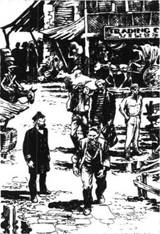
那时埃利奥特船长是港口的首席官员，他得知帕特纳号的船长到了之后，就马上派人把他找来。埃利奥特很看重义务和责任，无论对谁都敢大发雷霆。透过他敞开的办公室窗户，所有的人都听见了他对帕特纳号船长的怒斥，不一会儿那个胖子愤怒地跑了出来。他见我看着他，说：“那个英国疯子骂我是狗！”我笑了笑，“狗”是我听到的用在他身上的最礼貌的词了。“但我不在乎！”他继续说，脸气得发紫，“太平洋大着呢，我的朋友。如果你们英国人没收了我的船长执照，不许我指挥这儿的船，我就去——去阿皮亚，去檀香山——那儿有人认识我！”我不难想象认识他的人都是什么样儿的。
我再次打量那个年轻人，以为会看到他的愤怒、悲伤与羞愧。但他看上去镇定自若，让我无法理解。我喜欢他的样子；他看上去善良而诚实，是个没有什么想法，但却会努力工作，勇敢地活到最后的人。那时，我拥有自己的船已有些时日了，我训练过很多年轻船员，因此能判断出一个人是否可以信赖。我担心自己对吉姆的判断也许有误。他的性格中会不会缺少了某些东西？是什么让他做出这样的举动？
两个轮机员现在就站在船长前面，但是船长走开了，匆忙奔向一辆轻便马车。他爬进去，不耐烦地叫车夫出发，在人们能够阻止他之前，马车已经绝尘而去。他去了哪里，阿皮亚还是檀香山？从此再没有人见过他。
一星期后，为期三天的审讯开始了，但接受问讯的只有吉姆一人。船长逃跑了，两个轮机员都在医院里。胳膊断了的那个发起了高烧，而轮机长则喝了三天白兰地，根本不能清醒地说话。在我看来，唯一值得了解的事实不是船员怎样离开了船，而是他们为什么离开；而我也知道，审讯是查不出真相的。法官的工作不是去探察人的灵魂，而只是看他行动的结果。
布赖尔利船长是法官之一，他既是个勇敢的高级船员，也是个出色的水手，在东方所有的海港都赫赫有名。他年轻、健康、成功，似乎是那些从不犯错的幸运儿之一，因此也很有些自以为是。我们都认为什么都无法触动他和他的自信。但是我们错了，因为在审讯后一个星期他就自杀了。现在想起来，我觉得当其他两个法官审问吉姆的时候，布赖尔利正在默默地审问他自己。我想是他的良心让他受到了谴责——谁知道呢？这与钱、酒和女人都无关。但最后他发现自己有罪，所以自溺而死，给他的大副和船主留了几封信。
在审讯期间，我同他交谈过一次，我记得特别清楚，因为仅仅几天后他就突然死了。他在第一天审讯结束时跟我聊了起来。
“你不认为这样很愚蠢吗？”他愤怒地问我。我惊讶地看着他，因为布赖尔利通常都很平静。“为什么我们要攻击那个年轻人？为什么他要背上所有的黑锅？为什么他不逃走？”
“也许是因为他没有钱。”我回答。
“我们应该结束这件事，”布赖尔利接着说，“这种事会摧毁人们对咱们水手的信任。我给你一些钱，马洛，你去和他谈谈，让他离开，再给他一次机会。人们会很快忘记这件事的，他可以继续他的生活。当然，我不能亲自去告诉他这样做，但是你能。”
就这样，我在片刻间看到了真实的布赖尔利。我自然拒绝了他的要求，因为我不喜欢他让我去安排吉姆逃跑，再者我也认为吉姆能承担责任很勇敢。当然，我没有意识到这件事对布赖尔利多么重要，他或许想起了自己过去犯下的错误。
第二天审讯结束时，我一边往外走，一边同熟人说话。我注意到我们前面正是吉姆那宽阔的肩膀。我的朋友看见一条黄狗在人们腿之间跑来跑去，于是笑着说：“看那条可怜的狗！”我看见吉姆立即转过身。他向前走了几步，盯着我。我的朋友走到门口出去了，人群也消失了。刚才还有好几百人的地方突然只剩下了吉姆和我。房子里安静得出奇。
“你刚才是在对我说话吗？”吉姆用低沉的声音问。他脸色阴沉下来，看起来很凶。
“不是，”我看着他说，“你搞错了。”
“我不会让任何人在法庭之外辱骂我。”他说。虽然他语气平静，但看得出来他很愤怒。
“但我真的不明白你的意思。”我回答，努力去回忆我说了或做了什么。
“我很快就会让你知道我不是一条狗！”他大声喊着向我靠近。
这下我终于明白了。“上帝！”我说，“你不会认为我叫你……”
“但我确定……我听到有人这样说。”他回答。
我默默地指了指房子的角落，有一条狗正坐在那儿的阴影里。起初他似乎没明白我的意思，转而惊奇，继而羞愧。他被晒黑的皮肤一下子红了，从脖子红到了发根。我为他感到难过。他向我打开了他的心扉，却没有得到任何回应。他转身向外跑去。
我不得不快步跑过去追他，上气不接下气地和他交谈起来。此时他恢复了自制，向我道歉。“你看，”他解释着，“人们在法庭上盯着我，当中有很多人可能在想——我以为你说的那句话。在法庭上我不得不接受，而我也接受了，但在法庭之外是不同的。”
我没假装听懂了他的话，但我想进一步了解他，所以邀请他到我住的马拉巴酒店吃饭。
3．Jim tells his story
3
Jim tells his story
The big hotel dining-room was more than half full of people, eating, drinking and talking, while the dark-faced waiters hurried from table to table. And opposite me sat Jim, with his blue, boyish eyes looking straight into mine. I liked his young, honest face and his seriousness. He was the right kind; he was one of us. But how could he talk so calmly? Was it because he was controlling himself, or because he did not care?
Towards the end of dinner, I mentioned the inquiry. 'It must be awfully hard for you,' I said.
I was surprised by what happened next. He put out a hand quickly and held my arm, staring fixedly at me. 'It is—hell,' he cried. People at tables near us turned to look. I stood up, and we went outside, to sit on the veranda with our coffee and cigars. From our chairs we looked out at the sea, where the lights of the ships shone like stars in the thick, warm darkness.
'I couldn't run away,' Jim began. 'The captain did, but that's no good for me. The others have got out of it too, but I couldn't, and I wouldn't. I can never go home now, you know. I'm sure my dear old Dad has seen the story in the newspapers by now. I can never explain all this to the poor old man. He wouldn't understand.'
I looked up. I had the feeling he was extremely fond of his 'old Dad', and I imagined how proud the country vicar had been of his sailor son.
Jim went on, 'Look, you mustn't think I'm like those others—you know, the captain and the engineers. What happened to me was different.' I said nothing to agree or disagree with this, but I didn't know if he really believed what he was saying. 'I don't know what I'll do after the inquiry. Nobody will employ me as an officer again. I haven't any money to go anywhere else. I'll have to get occasional work on a ship, as an ordinary seaman.'
'Do you think you can?' I asked. I wanted to hurt him, to break his self-control.
He jumped up and turned away, then came back and looked miserably down at me. 'Why did you say that? You've been very kind to me. You didn't laugh when I—' here his voice trembled '—made that stupid mistake.' Looking away from me, he stared into the darkness. 'It's a question of being ready. I wasn't, not then.' And then, turning to me, 'Look, I'd like to explain—I'd like somebody to understand—one person at least! You! Why not you? Ah! What a chance I missed! My God! What a chance I missed!'
He was silent for a while, with a quiet, distant look in his eyes, as he thought of that lost opportunity. I watched him moving into his own private world of heroic dreams and adventures. Ah, he was romantic! He was very far away from me, although his chair was only a metre away from mine. Suddenly I saw from his delighted expression that he had reached the heart of his impossible world, and come to the end of his perfect dream. His young face wore a smile that your faces will never wear, my friends, nor mine either.
I brought him roughly back to the present by saying, 'You missed a chance when you left the ship, you mean!'
He turned quickly towards me, his dream broken and his eyes suddenly full of pain. 'You see,' he said after a moment, 'the hole in the side of the ship was so big! A piece of metal as big as my hand fell off while I was looking at it!'
'That made you feel bad,' I said.
'Do you suppose I was thinking of myself? There were eight hundred people on that ship, and only seven boats. I expected to see the hole widen and the water flow over them as they lay sleeping... What could I do?' He passed a hand over his head. 'The captain had sent me to check the damage again. At first I wanted to wake all the passengers up, but my mouth was too dry, and I couldn't speak. I felt completely helpless. When I looked at the unconscious sleepers around me, I saw dead men. Nothing could save them! There was no time! I could not repair the damage, and I could not save eight hundred people in seven boats! I saw, as clearly as I see you now, that there was nothing I could do. It seemed to take all the life out of my body. I just stood there and waited. Do you think I am afraid of death?' He banged his hand angrily on the table, so that the coffee cups danced. 'My God! I tell you I am not!'
He was not afraid of death, perhaps, but, my friends, I'll tell you what he was afraid of—the emergency. He was able to imagine, only too well, all the horrors of the end—water filling the ship, people screaming, boats sinking—all the terrible details of a disaster at sea. I think he was ready to die, but I suspect he wanted to die quietly, peacefully. Not many men are prepared to continue their fight to the end, when they find themselves losing to a much stronger enemy, like the sea.
'The engines had stopped, and it seemed very quiet on the ship,' he went on. 'I ran back up to the bridge, and found the captain and the two engineers trying to lower one of the ship's boats down into the sea. "Quick!" the captain whispered to me. "Help us, man!"
'"Aren't you going to do something?" I asked.
'"Yes! I'm going to get away," he said over his shoulder.
'I didn't understand then what he meant. The three of them were desperately pulling and pushing at the boat, and calling each other names, but something was wrong with the ropes and the boat wouldn't move. I stood away from them, watching the sea, black and calm and deadly. My head was full of ideas, and I was thinking hard, but I couldn't see any chance of survival for us. You think I'm a coward, because I just stood there, but what would you do? You can't tell—nobody can. I needed time...'
He was breathing quickly. He was not speaking to me, but seemed to be on trial in front of an unseen judge, who was responsible for his soul. This was a matter too difficult for the court of inquiry to decide. It was about the true nature of life, about light and darkness, truth and lies, good and evil.
As he spoke, his eyes shone. 'Ever since I was a boy, I've been preparing myself for difficulties and danger. I was ready, I tell you! Ready for anything! But—' and the light went out of his face '—this was so unexpected! Well, I'll tell you the rest. As I was standing there on the bridge, the second engineer ran up and begged me to help them. I pushed him away, in fact I hit him. "Won't you save your own life—you coward?" he cried. Coward! That's what he called me. Ha! ha! ha!'
Jim threw himself back in his chair and laughed loudly. I had never heard anything as bitter as that noise. All around us on the veranda conversation stopped. People stared at him.
After a while he continued with his story. 'I was saying to the Patna, "Sink! Go on, sink!" I wanted it to finish. Then in the sky I saw a big black thunder cloud coming towards us, and I knew the ship couldn't survive a storm. I saw that George, the third engineer, had now joined the other three, who were still trying to get the boat lowered. Suddenly George fell backwards, and lay without moving on the deck. He was dead. Heart trouble, I think. And just then there was a loud crash as the captain and the two others managed to get the boat down into the water. They were in the boat, and I could hear them shouting from below, "Jump, George! Jump!"'
Jim trembled a little, and then sat very still, as he relived the awful moment. 'There were eight hundred living people on that ship, and they were shouting for the one dead man to jump! "Jump, George, we'll catch you!" I felt the ship move—I thought she was going down, under me...' Jim put his hand to his head again, and paused for a moment. 'I had jumped... it seems,' he added. His clear blue eyes looked miserably at me, and I felt like an old man helplessly watching a childish disaster.
'It seems you did,' I agreed.
'When I was in the boat, I wished I could die. But I couldn't go back. I'd jumped into an everlasting deep hole...'
Nothing could be more true. He described to me the full horror of the hours he spent in that small boat with the three men. They called him evil names, angrily accused him of killing George, even talked of throwing him out of the boat. 'I didn't care what happened to me,' Jim went on. 'I wondered if I would go crazy, or kill myself. You see, I had saved my own life, while everything that was important to me had sunk with the ship in the night. We were certain the ship had sunk, you know. As we rowed away, we couldn't hear any cries, or see her lights. The captain said we were lucky to survive. And I decided not to kill myself. The right thing was to go on, wait for another chance, test myself...' After a long silence, he continued, 'Another ship picked us up the next day. The captain and the others pretended we had tried to save the passengers, but the Patna had sunk too fast. The story didn't matter to me. I had jumped, hadn't I? That's what I had to live with. It was like cheating the dead.'
'And there were no dead,' I said.
He turned away from me at that. I knew that a French ship had found the Patna sailing out of control. The captain had put several of his officers on board, and they sailed her to the nearest port, Aden. Although the Patna was badly damaged, it had not sunk, and nobody had died, except George, the third engineer, whose body was found on the bridge. The pilgrims were all put on to other ships to continue their journey to Mecca.
But everybody went on talking about the Patna. And now, when seamen meet in the Eastern ports, they very often discuss the strange story of the pilgrim ship, and the officers who ran away, just as I am telling you about it tonight.
occasional adj. occurring infrequently or irregularly 偶尔的。
romantic adj. sentimental, inclined to dream or imagine an idealized world 浪漫的，爱空想的。
delighted adj. very pleased and happy 高兴的。
childish adj. of, like, or appropriate to a child 幼稚的。
survive v. continue to live or exist in spite of (an accident or ordeal) 活下来。
吉姆讲述自己的故事
3．吉姆讲述自己的故事
酒店的大餐厅坐了一多半的人，在吃饭、喝酒和闲谈，深色皮肤的服务生在餐桌间匆忙地来来去去。吉姆坐在我对面，用他那双孩子气的蓝眼睛直视着我。我喜欢他年轻、诚恳、严肃的脸。他是个真正的水手，是我们的同类。但他说话时怎么会这样平静呢？是因为他在控制自己，还是因为他不在乎？
晚餐快结束时，我提起了审讯。我说：“这肯定难为你了。”
接下来的事让我震惊不已。他迅速伸手抓住我的胳臂，死死地盯着我，大声说：“这简直是——地狱。”邻桌的人都扭头看我们。我起身和他走出去，拿着咖啡和雪茄坐在阳台上。我们坐在椅子上看海，船只的灯光宛如星光，在浓重、闷热的黑夜中闪烁着。
“我不能逃，”吉姆开口说道，“船长逃走了，但那样做对我没有好处。其他人也与这件事脱了干系，但我不能，也不愿那样做。你知道，我现在永远回不了家了。我亲爱的老父亲一定已经在报上看到了我的事。我永远无法向这个可怜的老人解释这一切。他不会理解的。”
我抬头看着他，觉得他肯定非常喜欢他的“老父亲”，也想象得出这位乡村牧师如何为他当海员的儿子而自豪。
吉姆继续说：“哎，你千万不要认为我和其他人一样，你知道，我是说船长和轮机员。发生在我身上的事是不一样的。”我既没有表示同意，也没有表示反对，我不知道他是否真的相信他自己的话。“我不知道审讯结束后我该怎么办。没有人会雇我当高级船员了。我也没有钱去别的地方。我只能在船上找点儿零活儿，做个普通水手。”
“你觉得你能吗？”我问他。我想刺伤他，让他失去自控。
他跳起来走开，又回来痛苦地低头看着我。“你为什么这样说？你对我一直很好。你没有因为我犯下的愚蠢错误嘲笑我。”他的声音有点儿颤抖。他把目光从我身上移开，凝视着黑夜。“这是有没有做好准备的问题。我没有准备好，当时没有。”然后，他转向我说，“瞧，我想解释——我希望有人会理解——至少有一个人！就是你！为什么不呢？啊，我竟错过了这个机会！上帝啊，我竟错过了这个机会！”
他沉默了一会儿，目光平静而出神，他在想那个失去的机会。我看着他走进自己充满英雄梦想和历险的世界中。啊，他很浪漫！虽然我们的椅子相隔只有一米，他却离我很遥远。突然，从他快乐的表情中，我看出他已经到达了他心中的虚幻世界，到达了他完美梦想的终点。他年轻的脸上带着你们永远不会拥有的笑容，我的朋友们，我也永远不会有那样的笑容。
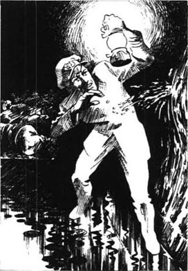
“你是说，弃船而去时，你错过了一个机会！”我无情地把他拉回到现实。
他快速转向我，他的梦破碎了，眼中顿时充满痛苦。“要知道，”他停顿了一会儿说，“船上的洞太大了！我看见的时候，一块和我的手一般大的金属掉了下来。”
“这让你感觉很糟糕吧。”我说。
“你以为我当时想的是自己吗？船上有八百人，但只有七条救生艇。我以为缺口会变大，让他们在睡梦中被海水淹没……我能做什么呢？”他伸手抚额，“船长让我再去检查一下破损的地方。起先我想叫醒所有的乘客，但我的嘴干得说不出话来。我感到无助。我看着身边毫不知情的梦中人，仿佛看到的都是死人。他们没救了！没有时间了！我无法把缺口修好，也无法用七艘救生艇救活八百人！我很清楚自己无能为力了，就像现在看见你这么清楚。这让我完全没了力气。我站在那儿一动不动地等着。你认为我怕死吗？”他愤怒地用手捶了一下桌面，震得咖啡杯跳了起来，“上帝！我告诉你我不怕！”
他或许不怕死，但是，朋友们，让我告诉你们他怕什么——他害怕紧急情况。他能想象出所有可怕的结局——水灌满船舱，人们惊恐尖叫，船慢慢下沉——海难中所有可怕的细节他都想到了。我想他对死亡已有准备，但他希望平静安宁地死去。当人们发现自己正被大海这样比自身强大许多的对手打败时，没有多少人能将战斗进行到底。
“发动机停了，船上很安静，”他接着说，“我跑回舰桥，看到船长和两个轮机员正在放一艘救生艇。‘快！’船长低声对我说，‘帮个忙，老兄！’
“‘你没打算采取什么措施吗？’我问。
“‘对！我打算马上离开这里。’他回头说。
“我当时没明白他的意思。他们三个拼命地把救生艇拖过来、推过去，互相对骂着，但绳子出了问题，救生艇一动未动。我站在一旁看着平静、黑暗而致命的大海，脑子里涌出各种各样的想法，我绞尽脑汁，但看不到任何生还的希望。你认为我是一个懦夫，因为我只是站在那儿，但如果换成你，你会怎样呢？你回答不上来吧——没有人能答上来。我需要时间……”
他说得上气不接下气。他不是在对我说话，倒像是在面对一个看不见的法官接受灵魂的审判。这个问题让审判庭去判定太难了。这关系到生命的真正本质，关系到光明与黑暗，真实与谎言，善与恶。
他说话的时候，眼睛闪闪发亮。“我从小就一直想着要准备应对各种困难和危险，我做好了准备，我告诉你！我准备好应对任何情况！但——”他的神色暗淡下来，“——事情发生得太出人意料了！好，我告诉你接下来发生了什么。我站在舰桥上，这时大管轮跑过来，央求我帮他们一把。我把他推开，实际上我打了他。‘你难道连自己的命都不救吗？你这个懦夫！’他嚷道。懦夫！他就是这样叫我的。哈！哈！哈！”
吉姆往后一倒，靠在椅子上，大声笑着。我从未听过如此苦涩的笑声。阳台上，我们身边的人都停止讲话，瞪大眼睛看着他。
过了一会儿，他接着讲述他的故事。“我对着帕特纳号说：‘沉没吧！沉下去，沉没吧！’我希望这一切结束。天空中有一大片黑色的雷雨云朝我们飘过来，我知道暴风雨就要来临，这艘船在劫难逃了。我看见二管轮乔治此时也加入进去，他们还在努力把救生艇放下来。突然，乔治仰面倒在甲板上不动了。他死了。我想是因为心脏病。就在那时，船长和另外两个人终于把救生艇放到水中，我听见一声巨响。他们上了救生艇，我能听到他们在下面喊：‘跳下来，乔治！跳下来！’”
吉姆回想着那个可怕的时刻，微微颤抖了一下，然后一动不动地坐着。“船上有八百个活生生的人，而他们却在喊着让一个死人跳下去！‘跳下来，乔治，我们会接住你的！’我感到船在移动——我想它在下沉，在我的脚下……”吉姆又伸手抱住了头，停了一会儿，“我跳下去了……似乎是。”他补充道。他用清澈的蓝眼睛痛苦地看着我，我感觉自己像一位老人无助地看着一场幼稚的灾难。
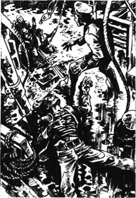
“你似乎是跳下去了。”我表示赞同。
“在救生艇上，我真希望死掉。但我回不去了。我跳进了一个无底深渊……”
他说的太对了。他向我描述了他和那三人在救生艇上经历的可怕的几个小时。他们用脏话骂他，愤怒地指责他杀了乔治，甚至说要把他扔出去。“我不在乎我会出什么事，”吉姆接着说，“我不知道我会不会发疯，或是自杀。你明白，我救了自己的命，而我看重的一切都在那个夜晚和船一起沉没了。我们确信船沉了，你知道。我们把小艇划走的时候，没有听见喊叫声，也看不到船上有光亮。船长说我们能活下来真是幸运。我决定不自杀了。正确的路是活下去，寻找下一次机会，检验自己……”他沉默良久，然后接着说，“第二天，另一艘船救了我们。船长和另两个人佯装我们曾试图救乘客，但帕特纳号沉得太快了。这套说辞对我不重要。我确实跳下去了，不是吗？我必须承认。这就像欺骗了死人。”
“但没有人死。”我说。
听我这么说，他转过身去。我知道一艘法国船发现帕特纳号在航行中失去控制。船长派几个船员把船带到了最近的港口亚丁港。尽管帕特纳号破损严重，但并没有沉，也没有人溺亡，只有二管轮乔治死了，人们在舰桥上发现了他的尸体。所有的朝圣者都被安顿到别的船只上，继续他们的麦加之旅。
但每个人都继续谈论着帕特纳号。现在，当水手们在东方的港口相遇时，还经常谈起这艘载着朝圣者的船只的离奇故事和逃走的几位船员，正如我今晚跟你们讲述的这样。
4．Marlow offers to help
4
Marlow offers to help
Our coffee and cigars were finished. I knew that tomorrow—or was it today? It was well past midnight—the inquiry judges would take up the weapon of the law and punish Jim. I told myself repeatedly that the young man was guilty, but I wanted to help him get away. My friends, if you can't understand my reasons, you haven't been listening to me all this time.
So I suggested Brierly's plan of escape to Jim. I would lend him some money—he could pay it back when he liked—and I would also write a letter to a friend of mine in Rangoon, who would give him a job. Jim could leave that same day, and save himself the shame of the final day in the crowded courthouse. I was impatient to begin writing the letter immediately. But Jim refused.
'Run away? No, I couldn't think of it,' he said, shaking his head. 'It's awfully good of you, but no.'
I am sure that things looked terribly uncertain to him at that moment, but he did not hesitate. He was young and strong, and there was something fine in his wild hope that he would survive.
I felt angry, however. 'The whole miserable business is bitter enough for a man like you...' I started saying.
'Yes, it is, it is,' he whispered, his eyes fixed on the floor. The way he spoke touched me to the heart. 'The captain escaped—the others went to hospital—they all got away...' He waved them scornfully away with his hand. 'But I've got to accept this thing. I'm not going to avoid any of it.'
'Oh really, my dear man...' I said crossly.
'You don't understand,' he replied, looking straight into my eyes. 'I jumped, but I don't run away.'
Neither of us knew how to continue the conversation. I stood up at last, saying, 'I had no idea it was so late.'
'I expect you've had enough of this,' he said, 'and to tell you the truth, so have I.'
Well, he had refused my offer of help, and he was ready to go now. Outside, the night was waiting for him, quietly and dangerously. For a few seconds we stood together silently.
'What will you do after—after...?' I asked, very low.
'Go to hell, probably,' he replied.
I judged it best to answer lightly, 'Please remember, I would very much like to see you before you go.'
'Nothing will prevent you,' he said bitterly. 'Everybody will know where I am.'
And then, as we said goodbye, he stupidly imagined that I did not want to shake hands with him. First he offered his hand, then pulled back, then hesitated, then—it was too awful for words. I had to shout at him, 'Jim! Shake hands with me, man!' Finally it was over, and he disappeared into the night. I heard his heavy footsteps. He was running, with nowhere to go to. And he was only twenty-three.
Next morning, the last day of the inquiry, I was in court again. It was really very wrong of me, because my chief mate was expecting me to visit my ship, but I had to know what would happen to Jim. Outside, the streets were full of colour and bright sunshine, but the courtroom was dark and airless. Jim stood there, pink and fair and serious, while the judge spoke. 'This court has decided that the officers of the Patna, who were responsible for all the ship's passengers, were guilty of forgetting their clear duty, when they left the ship in the moment of danger. The court has therefore decided to take away the master's certificates of the captain and chief mate.'
The room was silent, then people started to leave. I saw Jim, his face as black as thunder, walking out slowly and a little uncertainly. As I was watching him, a man called Chester spoke to me. I knew him a little. He was a West Australian who normally traded in the Pacific, but had come here looking for a cheap ship to buy. He watched Jim walking away.
'That young man's no good, is he?' he said. 'But I can give him a job. I've discovered a guano island among the Walpole rocks which is going to make me rich. It's rocky, and a bit dangerous to land there. I can't get anybody to take the job, but I need a man to do the work there for me. I don't care if he's a bit of a coward, or hasn't got his certificate. He'll have forty natives to collect the guano, and I'll give him a couple of guns, of course. You could persuade him to take the job, Marlow, couldn't you?'
I stared at him in horror. I knew the place he was talking about. There was no water on the island and very little rain fell there. I had a sudden picture of Jim on a shadowless rock, up to his knees in guano, with the screams of seabirds in his ears, and the sun beating down on his head.
'I wouldn't advise my worst enemy to accept your offer,' I said scornfully.
'It's just the job for him.' Chester smiled unpleasantly. 'I can promise the island wouldn't sink under him—and I believe he's a bit sensitive on that question.'
'Good morning,' I said sharply, and walked away, leaving him staring angrily after me.
I hurried down to the waterside, and found Jim looking miserably at the sea. He didn't hear me come up, but turned quickly when I touched his shoulder. He followed me back to the hotel obediently. I realized that he had nowhere in the whole world where he could be alone with his suffering.
He spent the rest of the day in my room, where he stood looking out on the veranda, while I sat at my desk, busily writing letters. We did not speak to each other. I wrote all the letters I owed people, and then I wrote to people who would certainly be surprised to receive a letter from me. It became dark, and still I went on writing. It was clear that he was very unhappy. Occasionally I saw his strong shoulders shaking, and I was glad his family could not see him like that. Suddenly, with a crash, he pushed open the glass door on to the veranda, and stepped out into the blackness, standing there like a lonely figure by a dark and hopeless sea. I began to think he was taking it all too seriously. Should I persuade him to accept Chester's offer? I knew there was nothing except myself between him and the dark sea. But I said nothing.
The time was coming when I would hear him described as a hero. It's true, I tell you. Towards the end, he found honour and a perfect happiness in the Malaysian jungle. When I saw him for the last time, a few years later, he was completely in control, strong and successful, loved and trusted by the natives of Patusan. But that is not the way I remember him. I shall always see his lonely, shaking figure on that hotel veranda, suffering in the darkness.
A crash of thunder made me lift my head, and lightning suddenly lit up the night. A few moments later, we were in the middle of a storm, with an angry wind shaking the windows. He stepped inside, closing the door behind him.
'Well, that's over,' he said, sounding almost normal. This encouraged me to look up at him. 'I think I'm all right now,' he went on. 'Thank you—for letting me—here in your room—nowhere else to go.' The rain was falling heavily on the veranda by now. 'Well—goodbye,' he said, and turned to go.
'Wait! Come back!' I cried. 'Look! Let me help you!'
'You can't,' he replied miserably. 'I can't take money...'
'It's not money I'm offering you!' I answered angrily. 'Look at this letter I'm writing! It's to a man I know well, asking him to give you work. I would only do this for a good friend. Just think about that.'
His face changed in a moment. 'My God!' he shouted. 'I never realized! How can I thank you? It's just what I wanted—an opportunity to start again! I know I can do it! Look—I'm sorry—I can't stay—I'm too excited!'
I waved my hand as he ran from the room. I had probably saved him from an early death, or perhaps from madness, but I felt sad. He was so young, and believed so fully in himself and in the beauty of life! I was no longer young, and I knew that his fate, like mine, was written in large letters on the face of a rock, and nothing he could do would change it.
My friend not only employed Jim, but welcomed him into his house. Unfortunately, only a year later, the second engineer from the Patna arrived unexpectedly in Rangoon, and Jim decided to leave the port at once. I was extremely disappointed to hear this, but helped Jim to find a second job in a port a thousand kilometres south of there. His new employers thought a lot of Jim, and trusted him with all their business. But one day the name of the Patna was mentioned, and Jim was too sensitive to bear it. Again, he left the place immediately. From now on, he moved from port to port to find work, trying to hide his terrible secret, until someone who knew the story spoke of it, and then he moved on again. I felt responsible for him, and helped and encouraged him as much as I could, but I knew that he was losing confidence in himself, although he was always cheerful and polite to me. What would be the end of it all? How long could Jim go on running away from his past?
I decided to ask for advice from someone I trusted more than most men. He was a rich German trader called Stein, who had a large business buying and selling all kinds of things in the islands, ports and jungle villages of the East. He was tall and thin, with a sympathetic, intelligent face, and white hair brushed back from a high forehead. Although his life had been long and adventurous, he now spent most of his time studying and collecting butterflies. In fact, by now he had become a world-famous collector. He was liked by everyone, for the bravery of his past, and the kindness he showed to all of us.
When I visited him in his large, dark study, he was looking delightedly at the best butterfly in his collection. 'A wonderful example!' he said, smiling. 'So beautiful! So perfect!'
'I have another example of nature to discuss with you,' I said. 'But I'm afraid it's a man, not an insect.'
His smile disappeared, but he listened encouragingly. 'I understand very well,' he said, when I had finished telling him Jim's story. 'He is romantic.'
I felt like a patient asking his doctor for advice, so it seemed natural to say, 'What is good for it?'
'There is only one kind of medicine! One thing alone can stop us from being ourselves—death!'
The problem appeared simple, but hopeless. 'Yes,' I said, 'so, the real question is not how to get better, but how to go on living.'
Stein agreed sadly. 'For a butterfly it is enough to be beautiful, and to live. But for man it is different, if he is sensitive. Every time he shuts his eyes, he sees himself as a hero, as a perfect man. It's all a dream—he can never be as fine as that. And so it is painful when he opens his eyes, to find he cannot make his dream come true. It is terrible for him. But you ask me—how to live?' His voice sounded suddenly strong and confident. He looked away from me into the shadows of his past. 'There is only one way. Follow the dream, and again, follow the dream, and so—to the end.'
No doubt Stein was right. He had travelled very far in life, always bravely, always without hesitating, and fate had brought him friends, love, adventure. But it seemed a lonely, difficult life to me. 'Nobody could be more romantic than you,' I told him. 'And sometimes you dream of a beautiful butterfly, but when it appears, you don't let the opportunity go, do you? You catch it! But Jim—'
Stein lifted his hand. 'Do you know how many opportunities I have missed? How many dreams I have lost?' He shook his head sadly. 'Perhaps I myself don't know. Everyone knows of one or two dreams like that. And that is the trouble... Well, it's getting late. Tonight you will sleep here, and tomorrow we will think of a way of helping the young man.'
He showed me to my room, and shook hands with me. 'Good night,' he said. I watched him return the way he had come. He was going back to his butterflies.
repeatedly adv. many times 多次地。
scornfully adv. in a contemptuous way 轻蔑地。
footstep n. a step taken in walking, especially as heard by another person 脚步；脚步声。
airless adj. not having enough air, or having air that does not move, so that it seems difficult to breathe 缺乏新鲜空气的。
guano n. the dropping of seabirds 海鸟粪。
early death death happening before the usual or expected time 过早去世。
sympathetic adj. feeling sorry for someone who is in a bad situation and understanding how they feel 同情的。
shut v. to close 关上，关闭。
马洛伸出援手
4．马洛伸出援手
我们喝完咖啡，也抽完了雪茄。我知道明天——也许应该说是今天了，现在已经过了午夜——审判官会根据法律制裁吉姆。我反复告诉自己，这个年轻人是有罪的，但我想帮助他逃跑。我的朋友，如果你们不理解我为什么这样做，那你们刚才肯定没有认真听。
我向吉姆建议了布赖尔利的逃跑计划。我表示能借给他一些钱——他什么时候还都可以——我还会给仰光的一个朋友写信，请他给吉姆一份工作，吉姆可以在当天离开，逃过最后一天在法庭上众目睽睽下蒙受的屈辱。我迫不及待想马上动笔写信，但吉姆拒绝了。
“逃跑？不，我连想都不能这么想，”他摇着头说，“你对我很好，但我不能这样。”
我确信他当时前途未卜，但他毫不犹豫地拒绝了我。他年轻力壮，心里还有不切实际的美梦，认为自己会幸免于难。
但我生气了。“这件倒霉事对你这样的人而言已经够受的了……”我开始说起来。
“对，是的，是的。”他低声说，眼睛盯着地面。他说话的样子触动了我。“船长逃走了——其余人都躲进了医院——他们都跑了……”他轻蔑地挥着手，“但我必须承担这件事。我不会逃避任何处罚。”
“哦，事实上，伙计……”我生气地说。
“你不明白，”他回答，眼睛直视着我，“我跳了，但没有逃。”
我们俩都不知道怎样把谈话继续下去。最后我站起来说：“我都不知道已经这么晚了。”
“我想你已经听够了，”他说，“实话对你说，我也受够了。”
就这样，他拒绝了我的帮助，准备离开。外面等着他的是沉默而危险的夜。我们一起默默无语地站了一会儿。
“往后——往后你怎么办？”我用很低的声音问道。
“也许下地狱吧。”他答道。
我想轻描淡写的回答会是最好的，于是说：“请记住，你走之前我很想见见你。”
“没有什么会阻拦你，”他伤心地说，“每个人都会知道我在哪儿。”
于是我们道别，他傻傻地认为我不想和他握手。他先主动伸出手，然后又缩了回去，犹豫了一会儿，然后——真是说不出的别扭。我不得不对他喊道：“吉姆！和我握握手吧，小伙子！”一切结束后，他消失在夜色中。我听见他沉重的脚步声。他奔跑着，却无处可去，而他才23岁。
次日是审判的最后一天，我一大早就到了法庭。我不该这么做，因为我的大副在等我去船上看看，但是我必须知道吉姆会怎么样。法庭外阳光灿烂，街道上五彩斑斓，但法庭里光线很暗，空气也不畅通。吉姆站在那儿，白皙的脸涨红了，一副严肃的表情。法官宣判：“法庭判决帕特纳号的船员有罪，他们对船上所有的乘客负有责任，然而在船只遇险时，他们却忘记了自己明确的职责，弃船而去，法庭因此决定吊销船长和大副的执照。”
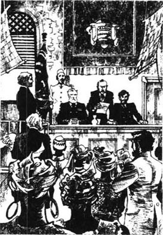
屋子里静悄悄的，人们渐渐散去。我看见了吉姆，他脸色阴沉，脚步迟疑地慢慢朝外走去。当我正看着吉姆的时候，一个名叫切斯特的人跟我说起了话。我对此人略知一二，他是澳大利亚西部人，常在太平洋一带做生意，他来这儿是想买一只便宜的船。他看着吉姆走出去。
“那个年轻人不怎么样，对吧？”他说，“但是我能给他一份工作。我在沃波尔暗礁区发现了一个鸟粪岛，它能让我发财。那里暗礁很多，在那儿登陆有点儿危险。我找不到愿意做这份工作的人，但是我需要一个人在那儿为我工作。我不介意他是不是懦夫，有没有执照。他要带着四十个当地人去收集鸟粪，当然我还会给他几杆枪。你能劝说他接受这份工作吗，马洛？”
我惊恐地看着他。我知道他说的地方。那个岛上没有水，也很少下雨。我的眼前突然出现了一个画面：吉姆站在光秃秃的礁石上，踩着没膝的鸟粪，耳边是海鸟的尖叫，烈日照在他的头上。
“即使是我的死对头，我都不会劝他去接受这份工作的。”我轻蔑地说。
“这个活儿适合他，”切斯特笑得叫人讨厌，“我敢保证，那个海岛不会在他的脚下沉没的——我相信，他对这个话题有些敏感。”
“再见。”我冷冷地说，转身走开了，丢下他在后面愤怒地瞪着我。
我快步走到海边，发现吉姆正忧郁地望着大海。他没听见我走过来，但我碰了碰他的肩膀，他很快就转过身。他顺从地跟着我回到酒店。我知道，他在这个世界上找不到什么地方去独自承受他的痛苦。
他在我的房间度过了那一天余下的时光，他站在那里看着外面的阳台；我坐在桌前忙着写信。我们相互没有说话。我把欠着别人的信全写完了，之后又写了几封信给其他几个人，这些人收到我的信一定会无比惊讶。我一直写到天黑。吉姆显然很不开心。我不时看见他宽厚的肩膀颤抖着，幸好他的家人看不到他这个样子。突然，“砰”的一声，他推开通往阳台的玻璃门，走到黑暗中，站在那儿，像黑暗、无望的大海上的一个孤影。我感觉他把这一切看得太严重了。我应该劝他接受切斯特提供的机会吗？我知道，在他和黑暗的大海之间，除了我再没有别的了。但我什么都没说。
总有一天我会听到人们像谈论英雄一样说起他。事实也的确如此。他后来在马来西亚的丛林中找到了荣誉和完满的幸福。几年以后我最后一次看见他时，他已经完全把握了自己的命运，变得强壮、成功，还赢得了帕图桑当地人的爱戴和信任。但他留给我的记忆并不是这些。我永远记得他在酒店阳台上孤独颤抖的身影，在黑暗中承受着痛苦。
随着一声雷鸣，我抬起头，闪电突然间照亮了黑夜。片刻之后，暴风雨铺天盖地而来，狂风摇晃着窗户。他走进来，关上身后的门。
“好了，一切都过去了。”他说，听上去已经恢复了常态。我这才抬头看他。“我想我现在好了，”他继续说，“谢谢你——让我——待在你的房间——我没有其他去处。”此时雨水密集地打在阳台上。“那么——再见。”他说着就要转身离去。
“等等！回来！”我喊着，“看！让我帮帮你吧！”
“你帮不了的，”他凄惨地回答，“我不能要你的钱……”
“我没有要给你钱！”我生气地说，“看我正在写的这封信！这是给我的一个熟人的，我请他给你一份工作。我只会为好朋友做这些。你考虑一下吧。”
他的脸色一下子变了。“上帝啊！”他喊道，“我没想到会是这样！我要怎么感谢你呢？这正是我想要的——一个让我重新开始的机会！我知道我能行的！看——对不起——我不能待在这儿——我太激动了！”
他跑着离开房间，我挥了挥手。也许我救了他，让他免于早逝或疯狂，但我很难过。他如此年轻，如此自信，如此相信生活的美好！而我已不再年轻了，我知道他的命运和我的一样已成定局，是他改变不了的。
我的朋友不仅雇用了他，还让他在自己家里住。不幸的是，仅仅一年之后，帕特纳号的大管轮出人意料地出现在仰光，吉姆决定立即离开这个港口。听到这个消息我很失望，但我又帮吉姆在南边一千多公里之外的一个港口找了一份工作。新的老板很欣赏他，把所有的生意都交给了他。但有一天，有人提到了帕特纳号，吉姆对这个名字仍很敏感。他又一次立即离开了。从那以后，他不断从一个港口迁移到另一个港口，试图隐瞒他可怕的秘密，一有知情人提到这件事情，他又会继续迁移。我觉得自己对他负有责任，总是尽力帮助他，鼓励他，但我知道虽然在我面前他总是乐呵呵的，也很有礼貌，但他已逐渐对自己失去了信心。这一切将如何收场？吉姆还能从他的过去逃离多久呢？

我决定去向一个人寻求建议。比起大多数人，我更信得过这个人。他是一位德国富商，名叫斯坦，他的生意很大，在东方的海岛、港口和丛林村庄将各种东西买进卖出。他高大瘦削，有一张富有同情心而智慧的脸，花白的头发从高高的额头向后面梳过去。他的一生漫长而充满传奇色彩，但现在他将大部分时间都用于研究和收集蝴蝶，而且如今已经成了世界著名的蝴蝶收藏家。大家都喜欢他，因为他过去的英勇行为，也因为他对所有人都很友善。
我去他昏暗的大书房拜访他时，他正兴致勃勃地欣赏着他最好的藏品。“这个标本真棒！”他笑着说，“多漂亮，多完美啊！”
“我有另一件大自然中的样本要与你探讨，”我说，“但不是昆虫，而是一个人。”
他收起了笑容，鼓励我说下去。我讲完了吉姆的故事，他说：“我能理解他，他很浪漫。”
我感觉自己像是一个求医的病人，所以自然而然地问：“那应该怎么办呢？”
“只有一种药能救他！只有一样东西可以使我们不再是自己——那就是死亡！”
问题听起来很简单，但却没有解决的希望。“对，”我说，“因此真正的问题不是如何使情况好转，而是怎样活下去。”
斯坦悲伤地认同了我的观点。“对蝴蝶而言，美丽地活下去就足够了；但对于一个敏感的人，情况就不同了。每当他闭上眼睛，他就把自己想象成一个英雄，一个完美的人。而这只是一个梦——他永远不会那么好。因此，当他睁开眼睛发现梦想无法成真时，就会痛苦不堪。这对他很残酷。但你问我——怎么活下去？”他的声音突然浑厚、自信起来。他把目光从我身上移开，移到他过去的影子上。“只有一条路。追寻梦想，一次又一次地追寻着梦想，这样——直到最后。”
毫无疑问斯坦是对的。他的人生之旅已经走了很远，他一直那么勇敢，那么果断，命运给他带来了朋友、爱情和历险。但在我看来，他的一生是孤独、艰难的。“没有人会比你更浪漫，”我对他说，“有时你会梦到一只蝴蝶，但当它出现时，你不会让机会溜走，对吗？你会抓住它。可是吉姆——”
斯坦举起手。“你知道我失去过多少机会，丢掉了多少梦想吗？”他悲伤地摇头，“或许我自己也不知道。每个人都有一两个那样的梦想。这就是麻烦……好吧，不早了。今晚你就在这儿睡吧，明天咱们想个办法帮助这个年轻人。”
他带我去了房间，和我握手道晚安。我看着他，他从来路回去了。他又回他的蝴蝶世界去了。
5．Jim goes to Patusan
5
Jim goes to Patusan
Marlow's cigar had gone out. He stood up, moved to the edge of the veranda, and stared out into the darkness. Behind him, the circle of listeners in their armchairs waited for the story to continue. At last, one of them said encouragingly, 'Well?'
Marlow turned to face them, carefully relit his cigar, and then continued with his story.
* * *
I don't suppose any of you have heard of Patusan? It doesn't matter. There are many stars in the sky that most people have never heard of, and which are of no importance to them anyway. Patusan was like one of these stars. It was occasionally mentioned by officials in Batavia, and it was known by name to a very few in the trading world. But nobody had ever been there, and, I suspect, nobody wanted to go there. That was where Stein arranged to send Jim. It was like sending him to the moon; he left his past world behind him, and started a completely new life.
Stein knew more about Patusan than anybody else. I have no doubt he had been there, perhaps looking for butterflies, when he was younger. It was at breakfast the next morning after our talk about Jim that he mentioned the place. I had just repeated what poor Brierly had said to me, 'He should creep away somewhere and hide.'
Stein looked up at me with interest. 'That could be done,' he said, drinking his coffee.
'You know, bury himself somewhere,' I explained.
'Yes, he is young, and could make another life for himself. Well, there is Patusan.' He added, 'And the woman is dead now.'
I didn't know the woman he had mentioned, but I learnt from Stein that she had been an intelligent, good-looking Dutch-Malay girl. She had married a worthless Portuguese man, who made her life extremely miserable. Because Stein felt sorry for her, he gave her husband a job, as manager of Stein & Company's trading-post in Patusan. Unfortunately, the Portuguese, whose name was Cornelius, was dishonest and lazy, so the trading-post lost money. Now that the woman had died, Stein wanted to replace Cornelius, and he generously suggested offering the job to Jim.
'There may be some difficulty with Cornelius,' said Stein. 'He'll be angry with Jim for taking his job. I don't think he'll want to leave Patusan, so he may cause trouble. But that has nothing to do with me. As he has a daughter, I think I shall let him keep the house he's been living in, if he wants to stay.'
Patusan is an area of deep jungle, far up the river, about sixty kilometres from the sea. There is a native village of the same name. Behind the roofs of the native houses, you can see the forest, and behind that there are two steep hills very close together, separated by a narrow valley. I saw all this later, when I visited Jim in Patusan. We were standing outside the very fine house that he had built for himself, on a warm, silent evening, watching an almost full moon rise behind the black hills. Red, and round, and nearly perfect, it sailed slowly upwards between the sides of the valley, finally moving away above the hill-tops, like a soul escaping from a buried body.
'Wonderful effect,' said Jim by my side. 'Worth seeing, isn't it?' He spoke proudly, and that made me smile. Did he feel he could control even the movements of the moon? He was in control of so many things in Patusan! Things that had once seemed as far beyond his control as the moon and the stars.
But Stein and I had no idea of this when we talked about sending him to Patusan. We both wanted to get him away, away from himself rather than anyone else. We knew he would be safer in a quiet, lonely place, with nobody who knew or cared about his past.
I must tell you, however, that I had another reason for sending him away. I was about to go home to England for a while, and I think I wanted, more than I myself realized at the time, to be free of him—do you understand? —before I left. I was going home, and he had come to me from there, with his miserable trouble and his shadowy dreams, like a man carrying something heavy on his tired shoulders in a thick mist. I cannot say I had ever seen him clearly, right up to the day when I had my last view of him. But the less I understood him, the closer I felt to him. After all, I did not know much more about myself. And then, I repeat, I was going home—to that distant place we all come from. We, the famous and the unknown, travel in our thousands all over the world, earning beyond the seas our good name, our fortune or perhaps just enough bread for that day. But when we go home, we meet again our friends, our family, and others—those whom we obey and those whom we love. More than that, we have to meet the soul of the country, that lives in its air, in its valleys, in its rivers and its trees—a wordless friend and judge. To breathe in the peace of home, to be happy there, I think we have to return with a clear conscience. I know that Jim felt something of this. He would never go home now. Never! He could not bear the idea of it.
And so, like a much older brother, I felt responsible for Jim. I was worried about what would happen to him. For example, he could start drinking. The world is small, and I was afraid of meeting him one day, in a foreign port, a red-eyed, dirty drunk, asking to borrow five dollars from me. You know how often that happens, when you can only just recognize a sadly changed figure from the past, who reappears in your life for a moment. That seemed the worst danger I could see for him or for me, but I knew I had no imagination. And Jim had plenty. People with imagination often go further than others in life, for good or evil. How could I tell what Jim would do?
You see, I'm telling you so much about my fears for him because there is not much of the story left. I hear you ask, was I right to be afraid for him? I won't say. Perhaps you can decide, better than I can. Anyway, Jim did not go wrong, not at all. In fact, he developed wonderfully, and lived his life bravely and honestly to the end. I ought to be delighted, because I was closely involved in his success. But somehow I am not as pleased as I expected to be. I ask myself if he really managed to carry himself out of that mist in which I had seen him. And another thing, the last word has not been said—will probably never be said. Our lives are too short for anyone to judge us fully. And we ourselves never have time to say our last word—the last word of our love, our trust, our sadness, our guilt, our fight against the darkness.
I won't tell you much more about Jim. In my opinion he reached greatness, but you may see it differently. My words may not be enough to persuade you, as I'm afraid you people think more of your bodies than your imaginations. I don't want to be rude; it is sensible to have no dreams—and safe—and useful—and boring. But surely, my friends, you too have known, once in your time, the brightness of life, the fire that burns in you so strongly and unexpectedly, then, too soon, disappears!
Jim's fame never reached the outside world, of course, from a place so lonely and far from anywhere. At one time Patusan was famous for its pepper, and in the seventeenth century Dutch and English traders travelled far through the jungle in their desperate search for this valuable plant. These heroic adventurers did not care about disease, hunger or death. Some of them left their bones whitening in a distant land, so that companies at home could make fortunes selling pepper. For a hundred years, they sent back news of Patusan, describing its rivers and jungle, its natives and customs, and the great Sultan who controlled the fate of all who lived there.
But now the pepper has all gone, nobody writes or talks about Patusan any longer, and the present Sultan is a young boy whose uncles have stolen his fortune.
It was Stein who told me all this. He was perfectly honest with me over the breakfast table that morning. It was an extremely dangerous place, where people could lose their lives at any time. This situation was mostly caused by Rajah Allang, the worst of the young Sultan's uncles. He controlled the river and the land around it, and, by robbing and murdering, made the local Malays fear and obey him. They could not get away, because they had nowhere to go and no way of escaping.
Well, I told Jim about Stein's generous offer, but I also described what I knew of Patusan and the dangers involved. I watched the expression on his face change from tiredness to surprise, interest and delight.
'This is the chance I've been dreaming of! I'm so grateful to Mr Stein! But of course it's you I have to thank...'
I spoke quickly to stop his flow of words. 'Stein was helped when he was young, and now he wants to help you. And I just mentioned your name, that's all.'
He reddened, saying shyly, 'You've always trusted me.'
'That's true. But do you trust yourself?'
'I've got to prove myself. But you won't be sorry you trusted me, I promise!'
'Remember, you must decide. You are responsible for this—this plan, you and no one else.'
'Why, this is exactly what I want!'
I smiled. He was so enthusiastic! 'You see,' I said, 'you wanted to go out and shut the door behind you.'
'Did I?' he asked, looking suddenly unhappy. 'Well, you've shown me a door, haven't you?'
'Yes. If you go through it, I can promise it will be shut behind you. No one will ask what has happened to you in that distant, unknown place. You will be alone, and you will have to manage everything yourself. The outside world will forget about you completely.'
'Forget about me completely, that's it!' he whispered to himself, his eyes shining delightedly.
'Well, if you understand the conditions, you'd better find a horse and trap, and drive to Mr Stein's house as soon as possible.' And before I had finished speaking, he had run out of the room.
He did not return until next morning, because he had stayed there for dinner and the night. He could not stop talking.
'What a wonderful man Mr Stein is! And how well he speaks English! In my pocket I've got a letter for Cornelius—you know, the man I'm replacing. And look—here's a silver ring that Mr Stein has given me. It was given to him by an old Malay friend of his called Doramin. He's one of the most important chiefs in Patusan. It seems that they fought side by side when Mr Stein was there, having all those adventures, so if I show Doramin this ring, he'll help me. I think Mr Stein saved his life once—he's a brave man, isn't he? He's hoping things are all right in Patusan—he hasn't had any news for over a year, so he doesn't really know. And the river's closed, but I'm sure I'll be able to get in.'
He almost frightened me with his excited talk. After all, he wasn't a boy going on holiday, but a grown man making a dangerous journey into the unknown. He noticed my expression, and it seemed to calm him a bit. 'You probably don't realize,' he said, 'how important the ring is to me. It means a friend, and it's a good thing to have a friend. Like you.' He paused. 'I'm going to stay there, you know.'
'If you live long enough, you'll want to come back.'
'Come back to what?' he asked absently.
'Is it to be never, then?' I asked after a moment.
'Never,' he repeated dreamily, then suddenly jumped up. 'My God! Mr Stein's ship sails in two hours' time!'
I went back to my own ship, and Jim came to say goodbye to me there. I gave him a gun and two boxes of ammunition, in case he needed them. 'The gun may help you to remain,' I said, then corrected myself quickly, 'may help you to get in, I mean.' But Jim was not troubled by this. He thanked me warmly, shouted goodbye, and jumped into his own boat. As his boatmen rowed away, I suddenly noticed he had left the ammunition behind, and I ordered my men to get a boat into the water at once. Jim was making his men row like madmen, and we could not catch him before he reached Stein's ship. In fact, our two boats arrived at the same moment.
We both stepped on to the deck, where I gave him the ammunition boxes. The ship was ready to sail. Stein's captain, a half-caste, spoke to me. He did not think Jim had any chance of survival, and was only prepared to take his passenger to the mouth of the river. 'Anybody who goes further into Patusan will certainly die,' he said. 'Between you and me, your friend is already a dead man.'
Then, while the captain shouted his orders, and the sails rose around us, Jim and I stood alone together on deck, shook hands, and said our last hurried words to each other. I no longer felt annoyed with him, as I had sometimes done in the past. It was clear to me what miserable danger he was going into. I believe I called him 'dear boy' and he called me 'old man'. For an unexpected, short moment we were very close.
'Don't worry,' he said. 'I promise to take care of myself. My God! Nothing can touch me. What a wonderful opportunity!'
As my boat pulled away from the ship, I saw him high up on deck, in the light of the dying sun, waving to me. I heard, 'You shall hear of me.' Because the sun was in my eyes, I couldn't see him well—it was my fate never to see him clearly—but I must say he looked very unlike a dead man to me.
trading-post n. a store or small settlement established for trading, typically in a remote place （设在人口稀少地区的）贸易站。
generously adv. liberal in giving and sharing 慷慨地。
beyond one's control impossible for sb. to control 不受某人控制。
wordless adj. without words, silent 沉默的。
drunk n. a person who is drunk or who habitually drinks to excess 醉鬼。
involved adj. connected, typically on an emotional or personal level 有关联的，参与进去的。
Sultan n. a ruler in some Muslim countries 苏丹（某些伊斯兰国家最高统治者的称号）。
Rajah n. the king or ruler of an Indian state （印度的）王公。
enthusiastic adj. showing a lot of interest and excitement about something 满腔热情的。
ammunition n. a supply or quantity of bullets and shells 弹药。
half-caste n. a person of mixed race 混血儿。
mouth n. the opening or entrance to a harbour or bay （江河的）入海口。
annoyed adj. slightly angry 烦恼的。
吉姆去帕图桑
5．吉姆去帕图桑
马洛抽完雪茄，站起来走到阳台边，凝视着一片黑暗。听众围坐在他身后的几把扶手椅上，等着他把故事讲下去。最后有一个人充满期待地问：“后来呢？”
马洛转过身面向他们，小心地重新点起雪茄，继续讲故事。
* * *
我想你们没有人听说过帕图桑吧？这没有关系。天上有很多星星，大多数人从来都没有听说过，这其实对他们也不重要。帕图桑就像这样的一颗星星。它偶尔会被巴达维亚的官员提及，商界也有少数人知道它的名字。但没有人去过那儿，我想也没有人想去那儿。斯坦就打算把吉姆送到这个地方。这就像把他送到月球上；他会把过去的世界丢在身后，开始崭新的生活。
斯坦比谁都更了解帕图桑。我确信他去过那里，也许是年轻的时候去寻找蝴蝶。就在我们谈话后的第二天早上吃早饭的时候，他提到了这个地方。当时我刚刚重复了可怜的布赖尔利对我说的话，“他应当逃到某个地方藏起来。”
斯坦饶有兴味地抬头看着我，边喝咖啡边说：“这倒可以。”
“你知道，让他去到某个不为人知的地方。”我解释着。
“对，他还年轻，能够为自己创造出另一番生活。嗯，他可以去帕图桑。”他补充说，“那个女人现在死了。”
我不认识他说的那位女子，但斯坦告诉了我一些她的事：她聪明、漂亮，是荷兰和马来西亚的混血。她嫁给了一个一无是处的葡萄牙男人，他毁了她的一辈子。斯坦可怜她，于是给她丈夫找了份活儿，在帕图桑管理斯坦公司的贸易站。不幸的是，那个名叫科尼利厄斯的葡萄牙人既爱耍滑头，又是个懒骨头，因此贸易站亏损了。既然现在这位女子已经不在人世，斯坦打算让其他人代替科尼利厄斯，他慷慨地提出把这份工作给吉姆。
“科尼利厄斯那边可能会有些麻烦，”斯坦说，“他会因为吉姆抢走这份工作而对他怀恨在心。我想他不愿意离开帕图桑，所以可能会制造一些麻烦，但这些与我无关。他有一个女儿，我想，如果他想留下来的话，我会让他继续保留现在的房子。”
帕图桑在丛林深处，位于河流上游很远的地方，距离大海60公里。当地有一个同名的村子。越过村子的屋顶，可以看到后面的森林，森林背后是两座陡峭的山，挨得很近，中间有一条狭长的山谷。这些是我后来去帕图桑看望吉姆时见到的。那是个温暖、宁静的夜晚，我们站在他自己盖的那间精巧的屋子外面，看着一轮将满的月亮从黑黝黝的山上升起。圆月泛着红色，看上去近乎完美，在山谷中慢慢升起，最终跃出山顶，宛如灵魂从被埋葬的尸体中逃逸。
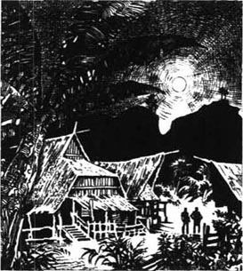
“这景象多棒。”吉姆在我身边说，“值得一看吧？”他自豪地说。我微微一笑。他难道认为连月亮的移动也在他的控制中吗？他掌握着帕图桑的这么多东西！而这些事曾经就和月亮还有星星一样遥远，是他望尘莫及的。
但斯坦和我商量把吉姆送去帕图桑时，我们从没有想过这些。我们都想把他送走，与其说让他远离其他人，不如说让他远离自己。我们知道，在一个宁静、孤独，谁都不知道，也不在乎他的过去的地方，他会更安全。
但我必须告诉你们，当初我想把吉姆送走还有另一个原因。那时我正打算回英格兰老家待一段时间，所以希望在离开之前摆脱他，现在想想，当时这种想法强得我自己都没意识到——你们能理解吗？我就要动身回家了，可他却从英格兰来到我面前，带着痛苦的折磨和虚幻的梦想，就像一个在浓雾中用疲惫的肩膀扛着重物的人。直到最后一次见面我都不敢说我看清过他。但我对他了解越少，反而感觉越亲近。毕竟，我对自己也并不怎么了解。那么，我再说一遍，我当时正打算回家——我们都从那个遥远的地方而来。无论功成名就，还是默默无闻，我们都成群结队地奔赴大海彼岸，在世界各地为名声、财富，抑或只是足够当天填饱肚子的面包而打拼。但还乡之时，我们将见到朋友、家人和其他的人——那些我们遵从和热爱的人。更有甚者，我们还要再次感受这个国度的灵魂，它存活在空气、山谷、河流和树木中——它是一位无言的朋友与裁决者。为了感受到家的安宁，为了在那儿能快乐地生活，我想我们应当带着干干净净的良心回去。我知道吉姆也有这种感觉。事到如今，他永远都不会回去了。永远不会！连这么想想也让他受不了。
因此，我像一个老大哥一样，深感自己对吉姆所负的责任。我担心他的将来。比如，他可能开始酗酒。世界这么小，我害怕某一天会在一个外国港口遇见他，一个脏兮兮的红眼睛醉汉向我要5美元。你们知道这种事情是很常见的，而那时你只能辨认出一个潦落不堪的昔日轮廓，在一瞬间重现在你的生命中。这是我预见到的对吉姆和我而言最糟糕的危险，虽然我知道自己没有什么想象力，但吉姆的想象力很丰富。想象力丰富的人在生活中总是走得比别人更远，或许是往好的方向走，或许是往坏的方向走。我怎么知道吉姆会做些什么呢？
你看，我一直在说我对他有这么多担心，因为剩下的故事不多了。我听见你们问，我是否应该这样为他担心。我不会回答。也许你们可以去判断，你们会判断得更好。不管怎样，吉姆没有走错，一点儿也没有。事实上，他走得非常好，一直勇敢而诚实地走到了生命的尽头。我应当感到高兴，因为我与他的成功有密切的关系。然而，我并没有像自己所料想的那样开心。我问自己，他真的从我看到他时包围他的那片雾气中走出来了吗？另外，他的一生还没有最后的定论——也许永远不会有。人生苦短，任何人都无法对我们做出全面的评判。而我们永远都没有时间为自己定论——表达我们的爱、信任、悲哀、罪恶感以及与黑暗的抗争。
关于吉姆的故事我没有什么要说给你们听的了。在我看来他很了不起，但你们可能会有不同的看法，我的话也许不足以说服你们，因为我担心你们更在乎实体而不是想象。我不想无礼；没有梦想是理智的——安全的——有益的——但也是乏味的。不过可以肯定的是，朋友们，你们在某个时刻也曾经懂得生命的光华，那团火焰在你心中燃烧得那么浓烈，那么出人意料，之后却转瞬间消逝了！
当然，吉姆的名声从未传到外面的世界，他所在的地方太偏僻了，离哪儿都很遥远。帕图桑曾因胡椒名噪一时，在17世纪，荷兰和英国的商人深入丛林，不顾一切地寻找这种名贵的植物。这些英勇的探险者不畏疾病、饥饿和死亡。为了让家乡的公司通过贩卖胡椒赚取财富，他们中有些人埋骨于遥远的异乡。一百年里，他们向家乡送回帕图桑的消息，描述着这里的河流、丛林、土著人和当地的风俗习惯，以及掌控着每个居民命运的伟大的苏丹。
但现在那里没有胡椒了，也没有人去写或是去谈论帕图桑了，现任的苏丹是个孩子，他的叔叔们偷走了他的财富。
这些都是斯坦告诉我的。那天早上他在早餐桌上对我坦言那里是一个极其危险的地方，人们随时可能丧命。很多时候这是王公阿朗造成的，他是小苏丹的叔叔中最坏的一个。他控制着河流及其周围的土地，又通过抢夺和杀戮让当地的马来人畏惧并顺从他。他们无法离开，因为他们无处可去，也没有办法逃走。
我把斯坦的慷慨提议告诉了吉姆，也说了我所知道的帕图桑的情况和存在的危险。我看见他疲惫的脸流露出惊讶，闪烁着兴趣和喜悦。
“这就是我梦想的机会！我太感谢斯坦先生了！但当然我也应该感谢你……”
我赶紧打断了他的话，“斯坦年轻时也受过别人的帮助，所以现在他想帮助你。我不过提了你的名字，仅此而已。”
他脸红了，不好意思地说：“你总是那么相信我。”
“是的。但你相信自己吗？”
“我会证明自己的。我保证你不会为相信我而后悔！”
“记住，你必须作出决定。这件事由你决定，只能由你，其他任何人都不行。”
“啊，这恰恰就是我想要的呀！”
我微笑着。他是那么有激情！“你看，”我说，“你想走出来，关上身后那扇门。”
“是吗？”他问道，突然显得不开心，“哦，你给我指了一扇门，是吗？”
“是的。如果你走过这扇门，我保证它会在你身后关上。在那个偏僻的、不知名的地方，没有人会去问及你的往事。你会孤单一人，独自去处理每件事。外面的世界会把你彻底忘掉。”
“彻底把我忘掉，正是这样！”他低声对自己说，他的眼睛闪着快乐的光。
“好吧，如果你明白这些情况，最好找一辆马车，尽快赶到斯坦先生家。”我的话还没说完，他就已经跑出去了。
他直到第二天早上才回来，他在斯坦家吃了饭，又留宿了一晚。他对我说个不停。

“斯坦先生太好了！他的英语说得真棒！我的口袋里装着给科尼利厄斯的信——你知道，就是我要顶替的那个人。看——这是斯坦先生给我的一枚银戒指。这是他的一位名叫多拉曼的马来老朋友送给他的。他是帕图桑最有地位的头领之一。斯坦先生曾在那儿和他并肩战斗，经历了各种危险，所以如果我把这枚戒指给他看，他就会帮助我。我想斯坦先生曾救过他一命——斯坦是个勇敢的人，不是吗？他希望帕图桑的一切安然无恙——他已经一年多都没有那边的消息了，所以也不清楚那边情况怎么样。河已经被封住了，但我相信我能够进去。”
他激情四溢的讲话差点儿把我吓着了。毕竟，他不是一个要去度假的孩子，而是一个将踏上未知世界的危险征程的成年人。他注意到我的表情，似乎平静了一点儿。他说：“你也许意识不到这枚戒指对我意味着什么。它意味着一个朋友，有朋友是一件好事。像你这样的朋友。”他停顿了一下，又说，“我会留在那儿生活，你知道。”
“如果你能活很久，你也许还想回来。”
“回来干什么呢？”他一脸茫然地问。
“那你永远不回来了？”过了一会儿，我问。
“永远不，”他心不在焉地重复着，然后突然跳了起来，“天啊！斯坦先生的船两个小时后就要开走了！”
我回到自己的船上，吉姆来向我告别。我给了他一杆枪和两盒子弹，以备不时之需。“枪也许能帮你活下来，”我说完又赶紧纠正，“我是说有枪或许能帮助你进去。”但吉姆对此毫不在乎。他热情洋溢地感谢我，大声和我道别，然后跳到自己的小船上。那船离开后，我突然发现他把子弹落下了，我命令手下立即划船去追。吉姆让船上的人发疯似地往前冲，所以直到他到达斯坦的船，我们才赶上他。实际上两艘船是同时到达的。
我们都上了甲板，我把装子弹的盒子交给他。船准备启航了。斯坦的船长是一个混血儿，他和我聊了起来。他认为吉姆活不下来，他只准备把他的乘客带到河流入海口。“进入帕图桑的人都必死无疑，”他说，“咱们俩私下说，你的朋友已经是个死人了。”
然后，船长大声发出命令，船帆在我们身边升起，吉姆和我在甲板上单独站在一起，相互握手，匆匆对彼此说了最后想说的话。他不再像以前那样让我感到烦恼。我很清楚他将面对怎样可怕的危险。我相信当时我叫他“亲爱的孩子”，他叫我“老伯”。在那一瞬间，我们出乎意料地亲近。
“别担心，”他说，“我保证会照顾好自己。老天！什么都不会伤害到我的。这是个多好的机会啊！”
当我的小船离开大船时，我看见他高高地站在甲板上，在落日的余辉中朝我挥手。我听见他说：“你会听到我的消息的。”因为迎着太阳，我看不清他——我注定永远都看不清他——但我必须说，在我看来，他一点儿都不像要死的样子。
6．Marlow visits Jim
6
Marlow visits Jim
The coast of Patusan is straight and dark, on a misty sea. When I arrived there, nearly two years later, I could see blue mountain tops beyond the thick green jungle. Fortunately, the river was open then, and our ship stopped at the fishing village, called Batu Kring, at the mouth of the river. We needed to take on board a native to guide our little ship up the river to the trading-post at Patusan. The man who agreed to come with us was the chief or headman of the village. He talked confidently to me (only the second white man he had ever seen), and most of his talk was about the first white man he had ever seen. He called him Tuan Jim, and spoke of him with great respect.
I thought of Jim's last words to me, 'You shall hear of me.' It was perfectly true. I was hearing of him.
At first, the headman told me, the natives had been very frightened of the lonely, white-uniformed figure, who had arrived so unexpectedly, and who gave them orders. He wanted them to take him by boat to the trading-post immediately. They were afraid Rajah Allang would be angry with them if they obeyed the stranger, but they were in greater fear of the white man's anger. After a lot of whispering among themselves, they decided that three of them would take Jim up the river by canoe.
That is how Jim entered the country where he became known and respected, from the blue mountains beyond the jungle to the white tops of the waves on the coast. Behind him were the waves of the sea, endlessly rising and sinking, and ahead of him were the immovable forests, reaching up towards the sunshine, but as dark and shadowy as life itself. And his opportunity sat waiting by his side, like an Eastern bride hiding her lovely face from her future husband.
But Jim told me later that he had never in his life felt so miserable and tired as in that canoe. He sat there, with his back straight and the sun beating down on his head, holding the gun I had given him. He felt almost sick with worry and the heat.
As soon as the canoe reached the trading-post, the three boatmen jumped out and ran off into the trees. Jim saw a stockade with high wooden posts on his left, and some native houses further away. He jumped out too, and at first seemed to be alone. But then a gate in the stockade was thrown open, and a lot of Malays ran towards him. At the same time, a boat full of men with weapons appeared on the river, so that he could not escape in the now empty canoe. There was no way out. The boatmen had handed him over to the Rajah's men.
'Luckily there was no ammunition in my gun,' Jim told me, 'so I didn't try to kill anyone, and they didn't hurt me. I just asked them what they wanted. They didn't know what to say. Finally a servant ran up to say the Rajah wanted to see me. "All right," I said, "I want to see him too," and I simply walked in through the gate. And do you know the best thing about it? I'll tell you. It was lucky for them that they didn't kill me.'
He was speaking to me in front of his house on that first evening of my visit, after we had watched the moon move away over the hills, like a soul rising from a dead body. Moonlight is confusing and mysterious; it makes real things look shadowy, and shadows look real. But Jim by my side seemed very strong—not even moonlight could make him look shadowy to me. Perhaps, indeed, nothing could touch him since he had survived his fight with evil.
All was silent, all was still in this lost corner of the world. The silvery grey houses crowding along the wide shining river seemed like a line of ghostly animals, pushing forward to drink from the lifeless water. Here and there, a warm red light shone through the thin house walls, where human beings ate, and talked, and rested.
'You know,' Jim said to me, 'I often watch those little lights go out one by one. I love seeing people go to sleep under my eyes, safe and happy, with no fears for tomorrow. Peaceful here, isn't it? Ask any man, woman or child here if they trust me...' He paused, and spoke with deep meaning. 'Well, now I know I am all right, anyway.'
'So you've found that out at last,' I replied. 'I was always sure you were.'
'Were you?' He touched my arm lightly. 'Well, then—you were right. My God! Just think what it means to me! How could I ever leave here? And after what you tell me of Mr Stein's offer... Leaving—it would be harder than dying. No, don't laugh, but I must feel—every day, every time I open my eyes—that I am trusted—that nobody can say—you know? Leave! Where would I go? Why? For what?'
I had told him (indeed it was the main reason for my visit) that Stein wanted to hand over the whole trading-post, with everything it contained, to Jim. At first Jim had refused to accept this generous offer, but I had made him realize that he had earned it. 'Stein is only giving you what you have made for yourself,' I had told him. And Jim had to give in, because all his successes, the trust, the fame, the love—all these things, which had given him control over his life and fate, had also made him a prisoner. He looked with an owner's eye at the land and its people, but it was they who owned him, to the last breath in his body.
The trust and respect of these people was something to be proud of. I, too, was proud for him. It was certainly wonderful. He had shown he was a brave, intelligent, well-organized leader of men. He clearly felt deeply and seriously about his work in Patusan—the work that had proved to him that he was 'all right'. That is why he seemed to love the land and the people with a kind of wild selfishness.
While I was in Patusan, Jim took me to visit the Rajah. 'This is where I was a prisoner for three days when I arrived,' he whispered to me, as we walked slowly through a silent and respectful crowd. 'Dirty place, isn't it? And they only gave me a small plate of rice and a bit of fried fish to eat! They took my gun away, of course, but they didn't lock me up. I was able to walk around inside the stockade.'
At that moment we arrived in front of the Rajah, and I noticed how Jim changed his way of speaking at once. His manner was calm and polite, and he spoke slowly and seriously, giving a lot of thought to his words. This had just the right effect on the evil old Rajah, who was clearly afraid of Jim, but still respected and trusted him.
Although their conversation was difficult for me to follow, I understood that Jim was acting as a kind of judge, and telling the Rajah the difference between right and wrong. Some poor villagers had been robbed while on their way to trade at Doramin's house, and it was clear that everyone knew the Rajah's men were responsible for this robbery. But to the Rajah, Doramin was a hated enemy, and the Rajah cried out suddenly, 'It's Doramin who is a thief!' His weak old body shook with anger, and all around us, his family and servants stared, their mouths open.
Then Jim began to speak. 'Nobody,' he said calmly, 'should prevent any man from getting his food and his children's food honestly. Nobody should ever steal.' There was a great stillness in the room. Finally the old Rajah looked up, shaking his head tiredly, and said, 'You hear, my people! No more of these little games.'
One of his servants came forward to offer us two cups of coffee. 'You needn't drink,' Jim whispered quickly to me.
I didn't understand what he meant at first, but just watched him as he drank. Then I realized, and felt extremely annoyed. 'Why the hell do you put me in danger like this?' I whispered back to him, smiling pleasantly all the time. I drank the coffee, of course—I couldn't avoid doing that—and we left soon afterwards.
'I'm very sorry about that,' said Jim quietly to me as we walked back to our boat. 'I really don't think he would try to poison us. Personally, I never think about it. You see, if I want to do any good here, I have to show I don't care about the danger. Many people trust me to do that—for them.'
'But anyone can see he's afraid of you,' I said crossly, all the time watching for the first sign of stomach pain.
'That's just it! He's probably afraid of me because I'm not afraid of his coffee.' He pointed to part of the stockade, where the tops of several posts were broken. 'Look, that's where I jumped over, on my third day as a prisoner. The Rajah and his advisers had spent all the time since my arrival trying to decide what to do with me, and I had just been waiting for something to happen. But suddenly I realized what extreme danger I was in, so I just ran at the stockade, and flew over like a bird. I picked myself up on the other side and ran as fast as I could towards the village houses, about four hundred metres away. Behind me I could hear shouting, as the Rajah's men started to follow me. Ahead of me was a creek. I jumped across it and landed in very soft, wet mud. I couldn't move my legs at all, and lay there, trying desperately to pull myself out with my arms. The mud came right up to my chin, and as I dug wildly, I thought I was burying myself even deeper. I was becoming exhausted, but I made one last great attempt—and at last felt myself creeping weakly out of the mud on the other side of the creek. Think of me, muddy and alone, in that terrible place, with no friends or anyone to help me! I ran through the village—women and children ran screaming from me, men stood still, staring at me in horror—I don't suppose I looked at all like a human being.
'Finally, I turned a corner, and fell into the arms of several surprised-looking men. I just had breath to cry, "Doramin!" They carried me to Doramin's house, which was inside its own stockade, and put me down in front of a large, important-looking man, sitting in a chair. Somewhere in my muddy clothes I managed to find Stein's silver ring. Everyone was shouting excitedly, and running here and there. I could hear shots in the distance from the Rajah's men, but here I was safe. Doramin's people were closing the heavy gates of the stockade, and giving me water to drink. Doramin's wife took care of me—she was very kind to me.'
About sixty families in Patusan considered Doramin their chief. His men frequently had fights with the Rajah's people, mostly about trading. The problem was that the Rajah thought he alone should trade in Patusan; he became wild with anger when he discovered anyone else buying or selling. He was a cruel, evil and cowardly man, who had made a habit of robbing and killing Doramin's people, until Jim came.
There was a third leader in Patusan, an Arab half-caste called Sherif Ali, who had persuaded some of the natives to join him. They lived high up on the top of one of the two mountains, and from there often came down at night to steal food and animals, kill people and burn buildings. Parts of the countryside were blackened and empty, and the local people were suffering badly. In this confused situation, none of the three leaders trusted or respected each other, and until Jim's arrival, there seemed no way of bringing peace to the country.
If you once saw Doramin, you would never forget him. He was much larger than most Malays, with a heavy body dressed in richly coloured clothes, and a big, flat, round head, with proud, staring eyes. No one ever heard him raise his voice. He never moved without help; when he walked, two strong young men dressed in white held his elbows. In the afternoons, he sat silently by his wife's side, looking out, through an opening in the stockade, at the dark green jungle, the distant purple mountains, and the silver shining river.
This old couple had a son called Dain Waris, a polite, handsome young man of twenty-four or five. They loved him deeply, although they never showed it. I liked him as soon as I met him. I realized he was both brave and intelligent, and I believe he trusted and even understood Jim. 'Dain Waris is the best friend I ever had, except for you,' Jim told me proudly. 'We fought together, you know. Against Sherif Ali. You see, when I arrived, the Rajah, Doramin and Sherif Ali were all afraid of each other. I soon realized what I had to do, but I needed Dain Waris's help. He was the first to believe in me, and he persuaded his father to agree to my plan.'
Jim's plan! I heard the whole story of it from him during my visit. He had decided that it was necessary to defeat Sherif Ali, and planned to attack his mountain home. Doramin owned several heavy old guns, used in the past for fighting jungle wars. One dark night, Jim arranged for teams of men using ropes to pull these guns right up to the top of one of the mountains. It was difficult, hot work, and all the time Jim and the men were lifting and pulling, old Doramin sat watching silently in his chair. The Malays already believed that Jim was doing the impossible. How could those guns, too heavy for one man to lift, reach the mountain top? This was the beginning of their great respect for Jim.
From there, Doramin's men had an excellent view of the other mountain top, where Sherif Ali and his followers were asleep. As soon as the sun rose, the first shots were fired, on Jim's order, and the battle began. Jim, with Dain Waris by his side, led a group up the second hill towards Sherif Ali's stockade. He knew he had to win this fight—Doramin's people were depending on him. He and Dain Waris were the first to break into the Arab's stockade. Close behind them came Tamb'Itam, Jim's personal servant and a fearless fighter. He was a Malay from the north, a stranger to Patusan, who for a time had been a prisoner of the Rajah. When he escaped, he came to Jim, and ever since had followed him everywhere, like a shadow.
The battle was violent, but short. The stockade was burnt down and Sherif Ali and his men were defeated. Some were dead, but most of them were chased away into the jungle.
When this wonderful news reached the village, people were delighted. They ran in and out of their houses, shouting, singing and laughing excitedly. Of course Jim was delighted too. He had succeeded in doing what he had promised, and now he could believe in himself again. I can't tell you how completely lonely he appeared to me, but somehow his loneliness added to his greatness. He seemed to be one of those men who can only be measured by the greatness of their fame, and his fame, remember, was the greatest thing for many a day's journey around, even beyond the jungle. His word was the one truth of every passing day, and reports of his fame travelled far and wide, heard on the lips of whispering men, full of wonder and mystery.
No one ever saw Sherif Ali again, and when some of his men crept back from the jungle later, it was Jim, advised by Dain Waris, who chose a headman from among them. The Rajah was afraid that Jim would attack him too—he could lose his land, his money, his women, his servants! —and therefore he behaved very carefully. So Jim found himself in complete control of one of the most dangerous corners of the world.
Old Doramin, however, had a secret wish. He wanted to see his son take the Rajah's place one day, and just before I left, he spoke to me about it. 'Of course Tuan Jim knows best,' he said, 'but if I could only have a promise! I worry about the future of our country. You see, the land is always here, but white men come and go. One day this white man, too, will—'
'No, no,' I replied quickly, without thinking. 'He won't go.'
Doramin looked into my face. 'That is good news indeed,' he answered calmly. 'But why do you say that?'
And his wife, a small, thin, motherly woman, asked sadly, 'Why did he travel so far away from his home? Has he no family, no old mother, who will always remember his face?'
I could not answer. Strangely enough, that evening, my last in Patusan, I was asked the same question again.
headman n. the chief or leader of a tribe （部落的）头人，村长。
canoe n. a light, slender boat that has pointed ends and is propelled by paddles 独木舟。
bride n. a woman on her wedding day or just before and after the event 新娘。
stockade n. a barrier or enclosure formed from upright wooden posts or stakes （一排）栅栏，（一排）围桩。
hand over pass to someone else 交出，移交。
confusing adj. difficult to understand because there is no clear order or pattern 令人困惑的。
robbery n. the crime of stealing things from a person or a place, especially by using violence 抢劫。
crossly adv. Angrily 生气地。
creek n. a small, narrow stream or river 小河，溪。
sherif n. an Arabian ruler （阿拉伯）酋长。
fire v. to shoot with a gun 放（枪、炮等）。
defeat v. to win a victory over 击败，战胜。
creep v. to move slowly and carefully, especially in order to avoid being heard or noticed 蹑手蹑脚地走；缓慢（或悄悄）地行走。
motherly adj. of, resembling, or characteristic of a mother, especially in being caring, protective, and kind 母亲的；慈母般的。
马洛看望吉姆
6．马洛看望吉姆
在薄雾笼罩的大海上，帕图桑的海岸笔直而阴暗。大约两年之后，我去了那儿，越过浓密葱郁的丛林，我能看到远处蓝色的山顶。幸运的是，河流当时是开放的，我们的船在河口处一个名叫巴都克灵的渔村停下。我们需要带一个当地人上船为我们指路，把我们的小船沿河开到帕图桑的贸易站。同意跟我们去的男子是村子里的头领。我是他见到的第二个白人，他谈吐很自信，而他和我谈论的多半是他见到的第一个白人。他称呼这个白人图安吉姆，一说到他就满怀敬意。
我想起吉姆对我说的最后那番话：“你会听到我的消息。”千真万确。我正在听他的消息。
这位头领告诉我，一开始，当地人很害怕这个形单影只、穿着白色制服的人，他出乎意外地来到他们中间，发号施令。他让他们立即划船带他去贸易站。他们担心遵从这位陌生人会惹恼王公阿朗，但他们更怕惹恼这个白人。他们私下商量之后，决定让三个人用独木舟带吉姆沿河而上。
吉姆就这样走进了这个国家，在这里他开始为人所知，并受到尊敬，从丛林远方的蓝色山脉到海岸边白色的浪尖都传诵着他的名字。在他身后，海浪永不停息地起起落落；在他前方，矗立不动的森林挺立在阳光中，但却又如生命本身一样暗淡和模糊。机会坐在他身边等待着，像是一位东方的新娘，在未来的丈夫面前藏起她美丽的脸庞。
但吉姆后来告诉我，他在那只独木舟上感到了从未有过的痛苦和疲惫。他笔直地坐在那儿，火辣辣的太阳照在头上，手里拿着我送他的那杆枪。焦虑和炎热几乎让他病倒了。
独木舟一到贸易站，三个划船的人就跳下船逃到了树林中。吉姆看到他左边有一个由高高的木桩围成的栅栏，远处还有一些当地的住房。他也跳下船，起先周围似乎只有他一个人。但后来栅栏上的一扇门猛地开了，很多马来人向他跑来。与此同时，一艘船出现在河上，上面载满手持武器的人，这样一来吉姆也无法坐空的独木舟逃走。他根本无路可逃。那几个划船的人把他交给了王公的手下。
“幸运的是我的枪里没装子弹，”吉姆告诉我，“因此我没有试图杀任何人，他们也没有伤害我。我只是问他们想做什么。他们不知道说什么。最终一个仆人跑过来说王公想见我。‘好的，’我说，‘我也想见他。’于是我就这么穿过大门走进去。你知道最精彩的是什么吗？我告诉你吧。没杀我他们算是走运了。”
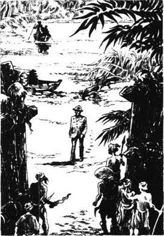
我去看他的第一个夜晚，我们站在他家门前聊天，看着月亮从山上移开，就像灵魂从尸体上升起，迷离而神秘的月色把真实的物体变成了影子，又把影子变得宛如实体。但我身边的吉姆看起来很强壮——甚至月光也无法让他在我眼中变得模糊。也许确实如此，自从他在与邪恶的抗争中幸存下来，什么都伤害不到他了。
万籁俱寂，在世界上这个被人遗忘的角落，一切都凝滞了。宽阔的河面波光粼粼，河边一座座银灰色的房子像一排动物的鬼影，探着头在毫无生气的水中酣饮。四下里有温暖的红光从薄薄的墙壁透出来，人们在屋子里面吃饭、聊天、休息。
“你知道吗，”吉姆对我说，“我常常看着这些微弱的灯光一点点熄灭。我喜欢看着人们入睡，他们安全、幸福，不用为明天担心。这儿很安宁吧？你可以去问这儿的任何一个男人、女人或孩子，问他们是否信任我……”他停顿了一下，然后意味深长地说，“好了，无论如何，现在我知道自己没事了。”
“嗯，你终于知道自己没事了，”我回答说，“我一直相信你会的。”
“是吗？”他轻轻地碰了碰我的胳膊，“好吧——你说对了。天啊！想想这对我意味着什么！我怎么能够离开这里呢？在你告诉我斯坦先生给我的帮助之后……离开——比死还困难。不，别笑，我必须感觉——每一天，每次我睁开双眼——自己被信任着——没有人能说——你知道吗？离开！我能去哪儿？又为什么离开？离开能得到什么？”
我告诉吉姆，斯坦想把整个贸易站和其中的东西都送给他（实际上这也是我来看他的主要原因）。起初吉姆拒绝接受这个慷慨的提议，但我让他明白他受之无愧。“斯坦不过是把你自己挣得的东西给你。”我对他说。吉姆不得不让步，因为他得到的一切成功、信任、名誉和爱——所有这些东西，既让他成了自己生活和命运的主人，同时又把他变成了一个囚犯。他用拥有者的目光看着这片土地和这里的居民，但实际上是他们拥有了他，直到他生命的最后一息。
能受到这些人的信任和尊敬是值得骄傲的。我也为他骄傲。这确实很了不起。他证实了自己是个勇敢、睿智、有很强组织能力的领袖。显然，他对在帕图桑的工作感情深厚，态度严肃——是这份工作证明他“没事了”。他也因此带着近乎疯狂的私欲爱着这片土地和那里的人民。
我在帕图桑的时候，吉姆带我去见了王公。“我刚来的时候就在这儿当了三天囚犯，”我们慢慢穿过满怀敬意的沉默人群时，他小声对我说，“这里很脏吧？他们当时只给我一小碟米饭和一点儿炸鱼吃！当然，他们拿走了我的枪，但没有把我关起来。我可以在栅栏里走动。”
我们来到王公的面前，我注意到吉姆说话的方式突然变了。他表现得沉着而有礼，说话慢条斯理，口气严肃，每句话都深思熟虑。这正好对付阴险老道的王公，他显然害怕吉姆，但仍然尊敬他，信任他。
虽然我很难跟上他们的谈话，但我听出吉姆正在担任某种法官的角色，告诉王公孰是孰非。有几个可怜的村民在去多拉曼家做买卖的路上被抢劫了，显然，每个人都知道这是王公的人干的。但王公对多拉曼恨之入骨，他突然大喊：“多拉曼才是贼！”愤怒让他年迈、虚弱的身体颤抖着，他的家人和仆人在我们周围瞠目结舌地看着他。
然后吉姆开口了。他平静地说：“任何人都不应当阻止别人以诚实的方式为他自己和他的孩子挣得食物。任何人都不应当偷窃。”屋子里安静了好一会儿。最后老王公抬起头，疲惫地摇着头，说：“听见了吧，大伙儿！别再用这些小花招了。”
一个仆人走过来，给我们端来两杯咖啡。“你不用喝。”吉姆很快地小声对我说。
我起先不明白他的意思，只是看着他把咖啡喝下去。之后我才明白过来，觉得恼火极了。“你为什么带我到这么危险的地方来？”我低声对他说，却一直愉快地微笑着。当然，我也把咖啡喝了下去——我不能不喝——之后我们很快就离开了。
“我很抱歉，”吉姆在返回船上的途中平静地对我说，“我真的不认为他会对我们下毒。我自己从没有这样想过。你明白，如果我想在这儿做点儿好事，就必须表现得无所畏惧。很多人都相信我会为他们讨公道。”
“但任何人都看得出来，他怕你。”我生气地说，一直留心着肚子痛的迹象。
“就是这样！他怕我可能是因为我不怕他的咖啡。”他指着一小片栅栏，有几根桩子的顶端已经断了，“看，我就是从那儿跳过去的，那是在我被囚禁起来的第三天。王公和他的谋士们从我一来这里就一直在考虑怎么处置我，而我只是在等待着。但我突然意识到了自己处境危险，于是我跑向栅栏，像鸟一样一跃而过。我从栅栏的另一边站起来，用最快的速度跑向大约400米外的村庄。我听得见身后的叫喊声，王公的人开始追我。在我前方是一条小河。我跳了过去，落在松软潮湿的泥里。我的腿动不了，我躺在那儿，使劲儿想用胳膊把自己拉起来。泥巴没到我脸，我发疯似地挖着泥，却感觉我把自己埋得更深了。我的气力渐渐耗尽，但我做了最后一次努力——终于感觉自己在河的对岸从泥巴中无力地慢慢爬出来。想一想，我那时浑身是泥，独自一人，在那个可怕的地方，没有任何朋友、任何人可以帮我！我跑着穿过村子——女人和孩子从我身边尖叫着跑开，男人一动不动地站着，恐惧地看着我——我想我看上去一定不成人样。
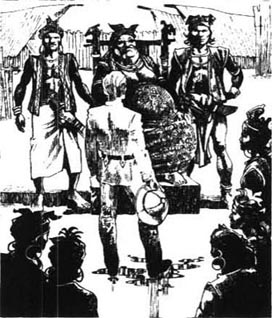
“最后，我转了个弯，然后就倒进几个表情惊讶的人的手臂中。我只剩下了一口气够我喊出‘多拉曼’的名字，他们把我带到多拉曼的宅子里，房子外面也围有栅栏。他们把我放在一个高大、威严的人面前，他坐在一张椅子上。我终于从沾满泥水的衣服里找到了斯坦给的银戒指。每个人都兴奋地叫喊着，到处跑动。我能听见王公的人在远处开枪，但在这里我是安全的。多拉曼的人把栅栏沉重的大门关上，还给我水喝。多拉曼的妻子照料我，她对我很好。”
帕图桑大约有60个家族把多拉曼看作他们的首领。多拉曼的人经常和王公的人发生冲突，大多是为了生意上的事。王公认为只有他才能在帕图桑做生意；一发现别人做买卖就气得发疯。他是一个残酷、邪恶、懦弱的人，常常抢劫、杀害多拉曼的人，直到吉姆到来。
帕图桑还有一个领导者，是个阿拉伯混血，他就是酋长阿里，他说服了一些当地人跟他一起干。他们盘踞了两山之一的山顶，常常夜里下山偷盗食物、牲口，还杀人放火。乡下好多地方都被烧成一片焦土，空无一人，当地人深受其害。在这种混乱的局面下，三个首领互不信任，互不尊敬，似乎没有办法让这里得到安宁，直到吉姆来了才改变了这一切。
如果你见过多拉曼，就永远不会忘记他。他比大多数马来人块头都要大，他那肥硕的身躯上套着鲜艳的衣服，脑袋又大又圆，头顶平平的，傲然的双眼炯炯有神。他从不高声说话。没有别人帮着，他根本动都不动；他走路的时候，总有两个穿白衣服的年轻彪悍的小伙子扶着他的胳膊肘。下午他总是安静地坐在妻子旁边，从栅栏的一个缺口向外张望，看着暗绿色的丛林，远处紫色的群山，以及银波闪烁的河流。
这对老夫妇有个儿子，名叫戴恩·沃里斯，小伙子彬彬有礼、英俊潇洒，有二十四五岁。老两口很疼爱他，虽然他们从不表露出来。我一见他就很喜欢，看得出他有勇有谋，而且我相信他不仅信任吉姆，甚至还理解他。“除了你，戴恩·沃里斯是我最好的朋友，”吉姆自豪地告诉我，“我们并肩与酋长阿里斗争。你要明白，我来这里时，王公、多拉曼和酋长阿里彼此畏惧。我很快意识到我该做什么，但我需要戴恩·沃里斯的帮助。他是第一个相信我的人，他还劝说他的父亲支持我的计划。”
吉姆的计划！我做客的日子里听吉姆讲述了整个故事。他决意要打败酋长阿里，并计划攻打他在山上的寨子。多拉曼有几架很沉的以前用于丛林战的老式火炮。在一个黑夜，吉姆安排几队人用绳索把这几架火炮拉到一个山顶上。这是个苦力活，吉姆一直和那些人又抬又拉，老多拉曼坐在椅子上安静地看着这一切。马来人开始认为吉姆做的事情是不可能成功的。这些火炮太重了，一个人扛都扛不起来，怎么能运到山顶？他们对吉姆的无比尊敬便始于此。
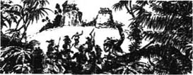
从那儿，多拉曼的人可以看清另一座山的山顶，酋长阿里和他的追随者们正在那里睡觉。太阳一升起来，吉姆便下令开炮，战斗打响了。吉姆领着一支队伍爬上另一座山，直奔酋长阿里的寨子。戴恩·沃里斯跟在他旁边。他知道自己必须打赢这场战斗——多拉曼的人就指望他了。他和戴恩·沃里斯带头冲进阿拉伯人的寨子。紧随其后的是坦比坦，吉姆的仆人，一个无畏的战士。他是从北方来的马来人，在帕图桑人地两生，曾经是王公的囚犯。他逃出来后投奔了吉姆，自此之后就像影子一样处处跟随着他。
战斗很激烈，但很短暂。寨子被烧毁了，酋长阿里和他的手下被打败了。有的人死了，但大多数都被赶进了丛林。
这个激动人心的消息传到了村子里，人们喜出望外。他们兴奋地跑进跑出，又是喊，又是唱，又是跳。吉姆当然也很高兴。他承诺的事情兑现了，他又找回了自信。我无法告诉你们他在我眼中有多么孤独，但在某种程度上，这种孤独让他更了不起。有些人只能用名气的大小去衡量，而他就是其中之一。别忘了，他的名声在那附近几天行程的范围内都如雷灌耳，甚至丛林之外的人都知道他。在过去的每一天里，人们把他的话当作唯一的真理，他声名远扬，人们低声谈论着他，带着几分惊奇，几分神秘。
没有人再见过酋长阿里，他的几个手下后来从丛林溜回来，吉姆听从戴恩·沃里斯的建议，从他们中间选了一个人做头领。王公害怕吉姆攻打他，让他失去土地、钱财、女人和佣人，因此行事非常小心。就这样，在这个世界上最危险的角落之一，吉姆感到自己掌握了一切。
但年老的多拉曼还有个深藏的愿望。他希望儿子有一天能取代王公的位置。在我临行前，他把这个想法告诉了我。“当然，图安吉姆知道怎样最好，”他说，“如果我能得到一个许诺就好了！我为这国家的未来担忧。你看，这片土地自古以来都在这里，但白人来了，又走了。有一天这个白人也一样，会——”
“不，不，”我连想都没想就立刻回答，“他不会走的。”
多拉曼看着我的脸。“这确实是个好消息，”他平静地说，“但你为什么这么说呢？”
他的妻子，一个瘦小、充满母性的女人伤心地说：“他为什么远离家乡？难道他没有家，没有一个总是记得他模样的老母亲吗？”
我无法回答。奇怪的是，当晚，也就是我在帕图桑的最后一个晚上，又有人问了我同样的问题。
7．Jim in love, and in danger
7
Jim in love, and in danger
This brings me to the story of his love. Remember the unspeakably awful Cornelius? I saw him and spoke to him myself, as he crept around Patusan with evil in his heart, and lying promises on his lips. How his poor wife had come to marry him is a mystery to me. I do not know, either, what had happened to her daughter's father, who was not Cornelius. The fact remains that she already had her daughter when she married the Portuguese. Bitterly disappointed with his life, he seemed to hate the woman and her child, and behaved very badly to both of them. The two women lived very lonely lives at the trading-post, with no other friends or companions. When the older woman died, a short time before Jim's arrival, the daughter was lonelier than ever.
Jim decided to leave Doramin's place after only a few days there, and move into the house at the trading-post, where Cornelius and the girl lived. Although Doramin warned him this would be dangerous, Jim felt it was his duty to take care of Stein's business. At first Cornelius pretended to be delighted that Jim was staying with him, but he soon showed his real character. Jim realized that Cornelius had been stealing from Stein at every opportunity. There seemed to be almost nothing left of the business, and some of the papers were missing.
'It was miserable there,' Jim told me. 'Cornelius was too mean to give me any regular meals. And then I heard the Rajah was planning to murder me! Pleasant, wasn't it?' He added that he didn't know what made him stay there for six weeks, but of course we can guess. He was very sorry for the motherless girl. It appears Cornelius frequently shouted at her, although he was too cowardly to hit her.
'Call me father, and with respect, too,' he used to scream into her face. 'Your mother was an evil woman, and you're evil as well!' The girl usually put her hands over her ears and ran away, while Cornelius chased her, shouting wildly and often throwing dirt at her. But sometimes she used to listen in silence, staring scornfully at him and replying with a poisonous word or two. Jim told me he could not leave the house while the poor girl was so unhappy; his conscience would not let him. But every day he received another message that there were plans to drown, shoot or poison him, and he realized he was in great danger. He no longer slept well at night. He noticed that Cornelius was acting very strangely, giving hesitating answers to Jim's questions, creeping secretly round the house in the dark, and having mysterious meetings with people at night.
One night, however, Jim was woken by the girl. She was holding a burning torch high above his head, and was whispering, 'Get up! Get up!' He jumped to his feet and she put his gun into his hand. 'Can you fight four men?' she asked.
He answered politely, 'Certainly—whatever you want,' and followed her outside. On the veranda he noticed that Cornelius's bed was empty.
The girl led him away from the house towards the trading-post buildings. She turned and whispered to Jim, 'They were going to attack you while you slept.'
Jim felt miserably disappointed. He did not want to hear any more about these attempts to kill him. He had only come outside with her because he thought she wanted his help. But they walked on together. It was a beautiful night, quite cool, with a soft wind blowing from the river. Remember, my friends, this is a love story I am telling you now.
The girl stopped outside one of the buildings and held her torch up high like a flag. 'They're in there, waiting for the sign,' she whispered. 'But you have been sleeping so restlessly. I watch you every night.'
'You've been watching me?' Jim felt first surprised, then delighted. But at that moment a movement caught his eye, and he saw a dark figure move quickly past. 'Cornelius!' he called in a strong voice. There was a deep silence.
'Run! Go to Doramin!' the girl said, excitedly. 'For the moment you are safe—they know you're awake, they know you're big, strong, fearless—but what about tomorrow? Or any other night? How can I always be watching?'
Jim was terribly touched by the feeling in her voice. He realized that the only escape from his loneliness was—in her. If he went away from her, he told me, it would be the end of everything. So the only thing to do was to enter the building and find his murderers.
He moved forward, and the girl, understanding his plan, ran round to the side of the building, and put her torch through the open window, so that he had enough light to see.
Jim threw open the door and went in. From a dark corner a man ran towards him, holding a knife. Jim shot him in the head and killed him. Three more men came forward, holding out their empty hands to show they had no weapons. 'Walk outside!' Jim ordered. At the door he was joined by the girl, still holding the torch. Her black hair fell to her waist, and her white dress touched the ground as she walked.
The three men walked in front, followed by Jim and the girl, until they reached the river. 'Jump!' shouted Jim, and the men jumped. Jim watched them swim into the distance. He turned to the girl. His heart seemed suddenly to grow too big for his chest, and he was unable to speak. They looked at each other for a long time, then she threw the burning torch far into the river. The calm soft starlight came down on them; it was one of those nights that seem made for love. I don't suppose he could express himself very well, but there are moments when our souls need silence more than words.
I met the girl, of course, on my visit. She had a child's sensitive face, and moved quickly and lightly, like a little bird. Her skin was smooth and her hair a deep blue-black, flowing thickly on to her lovely shoulders. She spoke and understood quite a lot of English, and used to listen carefully to our conversations, keeping her big clear eyes fastened on our lips. Her love for Jim surrounded him completely; I felt I could almost touch it. I suppose you think I, too, am romantic, but I'm just telling you what I saw. I realized she loved him deeply and jealously, but what she was jealous of, I did not know. After all, the land, the people, the forests were on her side, guarding Jim day and night and keeping him prisoner. Even Tamb'Itam, ready to die for the Tuan, was proud to guard Jim. And the girl herself, I believe, never went to sleep until Jim and I had separated for the night. More than once I saw her and Jim, through the window of my room, stand quietly together on the veranda—two figures very close, his arm around her waist, her head on his shoulder.
He called her Jewel. Pretty, isn't it? A strange name, of course, but it probably explained the surprising story I had heard on my way to Patusan, in a village about three hundred kilometres south of there. Local people told me that the mysterious white stranger who had taken control of the area had discovered a very large and valuable jewel. As he was often seen walking with a girl, behaving with great respect and care towards her, it was supposed that she wore the white man's jewel hidden in her dress. It was true that Jim took the girl on evening walks, and that romance had taken hold of him, but the rest of the story was just imagination. He did not hide his jewel; in fact, he was extremely proud of it.
'I—I love her dearly,' he told me. 'You see, it's so wonderful when you feel you're needed by someone. And her life was so awful before! She trusts me to take care of her. And I will! You know, I've been here only two years now, and I really can t imagine living anywhere else. The thought of the world outside is enough to frighten me, because—' and he looked down at his boots '—I haven't forgotten why I came here. Not yet!' We walked by the river in silence for a few moments. 'Isn't it strange that all these people, who would do anything for me, will never understand? If you asked them who is brave, who is faithful, who they would trust with their lives... They would say, Tuan Jim. But they can never know the real, real truth.' He paused again. 'It doesn't matter. I am—almost—happy with what I've done. And they believe in me—that's what they've done for me. I shall always remain here.'
When he left me, I saw the girl's white figure coming towards me. She had clearly been waiting for this opportunity. She wanted something simple but impossible—a promise, an explanation. Because she had grown up in Patusan and knew nothing of the strange world outside, her one great fear was that Jim, who had come from there, would one day return to it. She had watched us closely and listened to all our conversations, afraid perhaps that I was planning to take Jim away from her. And now she spoke to me, desperate to know what her fate would be. I was deeply touched by her helplessness; she was young, beautiful, and very unhappy.
'He promised he would never leave me,' she whispered, holding her lovely head in her hands.
'Why don't you believe him?' I replied. 'I certainly won't take him away.'
'They always leave us,' she said, even more quietly. 'I don't want to suffer like my mother. She cried bitterly while she was dying. My father also promised never to leave, you know.'
'Ah! but Jim isn't like that,' I said. She was silent; it seemed strange to me. 'What has he been telling you?'
'I don't know!' she cried miserably. 'He says there's something he can never forget! What is it? Tell me! You both remember something! Is it alive? Is it dead? I hate it! Will it come for him? Will he see it in his sleep, perhaps, when he cannot see me, and then leave me? Will it be a sign—a call?'
I was deeply moved by her pain. I wanted very much to bring calm to her soul, and to say, 'Have no fear!' But how do you kill fear? Can you shoot a ghost through the heart, can you cut off its head? I spoke with a heavy heart, with a kind of anger. 'There is nothing in that unknown world outside, no face, no voice, no one alive or dead who can take Jim away from you.'
'He told me that,' she answered softly. 'But why did you come? You make me afraid. Do you—do you want him?'
'I shall never come again,' I said bitterly. 'And I don't want him. No one wants him. This world you don't know is too big to miss him. And you've got his heart in your hand. You must feel that. You must know that.'
'Yes, I know that,' she whispered, hard and still, like a figure in stone.
I was getting excited. I felt I almost had a chance of killing the ghost at last. 'In the whole world there is no one who will ever need his heart, his head, his hand! From all the millions of people out there, I can tell you that as long as he lives, there will never come a call or a sign for him! Never! Why are you afraid? You know he's strong, faithful and brave. He is more than that. He has greatness—and the world doesn't want him, it has forgotten him!'
I stopped. There was a deep silence over Patusan.
'Why?' she asked quietly. I felt the ghost escaping, and, confused, did not answer. 'Why?' she repeated. 'Tell me!'
Suddenly I cried out angrily, 'Because he is not good enough.'
'That is what he said,' she replied scornfully. 'You lie!'
'Listen!' I cried. 'Nobody, nobody is good enough...'
She turned away. How could I explain? He had told her and she had not believed him. Who knows if we both lied or not?
But none of that mattered. You see, I had decided that Jim, who was the only one I really cared about, had at last taken control of his fate. He had told me he was—almost—happy with what he'd done. Not many of us can say that. Can any of you here? No, I thought not. So it did not matter who trusted him, who loved him, who hated him.
The next morning Jim came with me on the first part of my journey out of Patusan. As our canoe moved fast down the river, the trading-post and the houses disappeared behind us.
'That man Cornelius hates you,' I said, remembering a recent conversation with the Portuguese. 'He thinks you've stolen everything from him. He could be dangerous.'
'My dear Marlow, I feel that if I go straight, nothing can touch me. Everything depends on me, and my God! I know I can do it. Cornelius isn't worth worrying about.'
The air was hot and heavy, and smelt of mud. We were silent for a time, knowing we would separate soon. Suddenly the sky seemed to widen, there was a freshness in the air, and at last we were out of the jungle. Ahead of us was the open sea. I breathed deeply, I felt free again. The girl was right. There was a sign, a call from the wider world outside, for me!
'This is wonderful!' I cried, then looked at the unfortunate man beside me. He sat with his head bent low on his chest, and did not look up, perhaps afraid to see what his romantic conscience had written on the clear sky.
I remember the smallest details of that afternoon. We landed on a white beach, near the mouth of the river, to wait for my ship. Two natives came to tell Jim that the Rajah's men were stealing their eggs. He told them gently to wait, and they sat down obediently on the ground.
'You see, I can't go away,' he said to me. 'The people here need me now. They would fight among themselves if I left. I must stay. I shall be faithful.' I remembered Stein's words—follow the dream, to the end. 'And there's Jewel,' he went on. 'She's everything to me. When shall you and I meet again, I wonder?'
'Never—unless you come out,' I replied. He didn't seem very surprised. He was quiet for a while.
'Goodbye, then,' he said after a pause. 'Perhaps it's best this way.' We shook hands, and I walked to the ship's boat, which by now was waiting for me in shallow water.
'Will you go home again soon?' asked Jim, just as I was getting in.
'In a year or so, if I am alive then,' I said.
The boat started moving away from the beach. Jim, at the water's edge, spoke louder. 'Tell them...' he began. I ordered the boatmen to stop rowing, and waited. Tell who? 'No–nothing,' he said, and waved us away. I did not look at the beach again until I had climbed on board the ship.
By that time the sun had gone down and the coast looked very black, but I could still see Jim on the beach. The two natives were standing close to him, no doubt telling the white lord about their miserable, difficult lives, and he was listening patiently. They soon disappeared in the growing darkness, but Jim remained, white from head to foot. He had the sea at his feet, and the opportunity by his side—still hidden from him. What do you think, my friends? Was it still hidden? For me that white figure in the stillness of coast and sea seemed to stand at the heart of a great mystery, catching all the light left in a darkened world... And then, suddenly, I lost him...
awful adj. extremely bad or unpleasant; terrible 可怕的。
companion n. a person with whom one spends time or travels 同伴。
torch n. a portable light produced by the flame of a stick of resinous wood or of a flammable material wound about the end of a stick of wood 火把。
restlessly adv. unable or unwilling to keep still, especially because you are impatient or bored 不安宁地。
jealously adv. fiercely protective or vigilant of one's rights or possessions 小心守护地，唯恐失去地。
faithful adj. remaining loyal and steadfast 忠诚的。
obediently adv. willing to obey 顺从地。
爱与险境中的吉姆
7．爱与险境中的吉姆
说到这儿，就得讲讲他的爱情故事。还记得那个可怕得无法形容的科尼利厄斯吗？我见到了他，并和他说了话，当时他正怀着邪恶的念头在帕图桑游荡，四处骗人。我一直不知道他可怜的妻子是怎么嫁给他的。她女儿的父亲不是科尼利厄斯，同样，我也不知道在这位父亲身上发生了什么。事实上，她嫁给这个葡萄牙人的时候就已经有这个女儿了。科尼利厄斯对他的生活失望透顶，也恨这个女人和她的孩子，对母女两个很不好。这对母女在贸易站过着十分孤独的生活，没有朋友和同伴。吉姆来这里不久前那位母亲死了，留下她的女儿比从前更孤独。
吉姆在多拉曼的寨子只过了几天就决定离开，搬到贸易站的房子住，科尼利厄斯和那个女孩住在那儿。虽然多拉曼警告他去那里可能会有危险，但吉姆觉得自己有责任照顾斯坦的生意。一开始，科尼利厄斯假装欢迎吉姆和他住到一起，但很快就露出了真面目。吉姆发现科尼利厄斯在用一切机会偷斯坦的东西。生意已经赔得几乎什么都不剩了，一些文件也丢了。
“在那儿的日子糟透了，”吉姆告诉我，“科尼利厄斯太吝啬，连我的一日三餐都不保证。接着我又听说王公计划杀我！真不错，是不是？”他还说他不知道为什么在那儿待了六个星期，但我们可以去猜测。这是因为他可怜那个失去母亲的女孩。科尼利厄斯虽然没有胆量打她，但总是向她大吼大叫。
“尊敬地叫我父亲，”他过去常常对着女孩大叫，“你妈妈是个坏女人，你也一样！”女孩总是捂着耳朵跑掉。科尼利厄斯去追她，边跑边疯狂地叫喊，还常常用难听的话骂她。有时她会安静地听着，藐视地瞪着他，用一两个恶毒的词回敬他。吉姆告诉我，这个可怜的女孩过得太苦了，他不能在这个时候离开；良心不允许他这样做。但每天他都会听到一些新的消息，说有人计划淹死他、枪击他或对他下毒，他意识到自己正面临很大的危险，晚上也睡不好觉了。吉姆注意到科尼利厄斯行为古怪，回答他的问题时总是支支吾吾的，还在夜里偷偷摸摸地在房子里走动，神秘地跟什么人见面。
然而，一天夜里，吉姆被女孩叫醒了。她举着一支点燃的火把，在他头顶上低声说：“起来！起来！”他跳起来，女孩把他的枪交到他手上。“你打得过四个人吗？”她问。
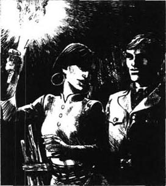
他礼貌地回答：“当然——你想做什么我都能办到。”然后他跟着她走了出去。在阳台他注意到科尼利厄斯的床是空的。
女孩带他出门朝贸易站的房子走去。她转过身低声对他说：“他们打算在你睡着的时候对你下手。”
吉姆太失望了。他不想再听什么有关想杀他的企图。他以为她需要帮助才跟她跑到外面来。但他们继续一起走着。夜色很美，清新凉爽、轻柔的风从河边吹过来。记住，我的朋友们，我现在向你们讲的是一个爱情故事。
女孩在一间屋子外停下了，高举的火把像一面旗帜。“他们在那里面，等着行动的信号，”她低声说，“但你一直睡得不安稳。我每天夜里都守着你。”
“你一直守着我？”吉姆先是惊讶，接着是欣喜。但与此同时，他发现有什么在动，他看到一个黑色的身影很快地跑了过去。“科尼利厄斯！”他沉声喊道。接着是一段寂静。
“快跑！去找多拉曼！”女孩情绪激动地说，“你现在是安全的——他们知道你醒了，他们知道你强壮有力，无所畏惧——但明天怎么办呢？其他的日子怎么办呢？我怎么能一直守着你呢？”
吉姆被她声音中流露的情感深深打动了。他意识到，摆脱孤独的唯一办法是和她在一起。他告诉我，如果离开她，一切就都结束了。所以他只有闯入房子，找到要杀他的人。
他向前走去，女孩明白他想做什么，她绕到房子的另一侧，把火把探进打开的窗户，好让他有足够的光线看清。
吉姆猛地推开门走进去。一个人从黑暗的角落冲出来，拿着刀扑向他。吉姆开枪击中他的头，把他打死了。又有三个人走出来，朝吉姆摊开空空的双手，表明他们没有带武器。“出去！”吉姆命令他们。在门口女孩过来和他一起走出去，她还举着火把，黑色的头发垂到腰间，走路的时候白色的裙子会触到地面。
三个男子走在前面，吉姆和女孩走在后面，一直走到河边。“跳下去！”吉姆大声命令，那几个人跳进河里。吉姆看着他们游到远处，然后转过身，面朝女孩。他的心脏似乎突然胀大了，仿佛就要冲出胸口，他说不出话来。他们彼此对视了很久，然后她把燃着的火把远远地扔进河里。宁静柔和的星光照在他们身上；这样的夜晚正是为爱营造的。我想吉姆不大善于表达，但有些时候，灵魂更需要沉默，而非言语。
当然，我去拜访吉姆时也看见了这个女孩。她有一张孩子般生动的脸，动作如小鸟般敏捷轻盈。她皮肤光滑，头发浓密，呈深深的蓝黑色，柔顺地落在漂亮的肩膀上。她能说也能听懂很多英文，她总是用心听我们的谈话，大而清澈的眼睛一直盯着我们的嘴唇。吉姆被她的爱完全包围了；我觉得自己几乎可以触摸到这种爱。我猜你们认为我也很浪漫，但我只是告诉你们我看到的事实。我知道她深爱着他，唯恐失去他，但我不知道她担心什么。毕竟，这片土地、这些人以及这片森林都站在她一边，日夜守着吉姆，囚禁着他。甚至连乐意为图安而死的坦比坦也为守卫吉姆而自豪。我相信，每天晚上，女孩直到看见吉姆和我告别才去睡。不止一次，我从房间的窗户看见她和吉姆一起安静地站在阳台上——两个身影靠得很近，他用胳膊搂着她的腰，她把头靠在他肩膀上。
他叫她宝石。很美吧？这个名字固然奇怪，但它或许解释了我在去帕图桑的路上，在那以南三百公里的村子里听到的令人惊讶的故事。当地人告诉我，控制这片土地的神秘白人发现了一颗很大、很贵重的宝石。因为人们常看见他和一位女孩走在一起，对她很敬重，很关心，所以猜测女孩的衣服里藏着这位白人的宝石。吉姆确实常在晚上带着女孩去散步，而且心中充满对她的爱，但故事剩下的部分仅仅是人们的想象。他没有把宝石藏起来；实际上，他对此很自豪。
“我——我很爱她，”他告诉我，“你明白，被某个人需要的感觉是多么美妙。她的生活以前是那么糟糕！她相信我能照顾好她。我会的！你知道，我现在只在这儿待了两年，我真的无法想象在其他地方生活。想起外面的世界我就恐惧，因为——”他低下头看他的靴子，“——我没有忘记我是为什么来到这里的。还没有忘记！”我们沿着河沉默地走了一会儿，“这儿的人什么都愿意为我做，但他们永远都理解不了这些，这很奇怪，不是吗？如果你问他们，谁是勇敢、忠诚、他们愿意将生命托付的人……他们会说，图安吉姆。但他们永远都不知道真正的事实。”他又停顿了一下，“没关系。我——基本上——对自己所做的一切很高兴。他们也信任我——那是他们为我做的。我会一直留在这里。”
他离开后，我看见女孩白色的身影向我走来。显然她一直在等待这个机会。她希望得到一个简单却不可能的东西——一个承诺，一种解释。她在帕图桑长大，对外面光怪陆离的世界一无所知，所以她最担心的就是吉姆，这个从外面世界来的人，也许有一天还会回到原来的地方。此前她一直密切地注视我们，仔细聆听我们所有的谈话，也许是害怕我要把吉姆从她身边带走。现在她拼命想从我这儿知道她的命运。她的无助打动了我；她年轻、漂亮，却很痛苦。
“他答应永远不离开我。”她用手托着她美丽的头颅低声说。
“你为什么不相信他？”我回答，“我当然不会带他走。”
“他们总是会离开我们，”她的声音更低了，“我不想经受妈妈受过的苦。她死的时候哭得很伤心。要知道，我父亲也曾允诺永远不离开她。”
“哦，可吉姆不会这样的。”我说。她没有说话；我觉得有些奇怪，问她：“他一直怎么对你说的？”
“我不知道！”她伤心地哭起来，“他说有些事情他永远都忘不了！那是什么事？请告诉我！你们俩都记得一件事！它还存在吗？或是已经不在了？我恨它！它会来纠缠他吗？他会在梦中，在看不见我的时候看见它，然后离开我吗？它会是一种信号——一种召唤吗？”
我被她的痛苦深深触动了。我很想抚慰她的心，对她说：“别怕！”但你怎么能消除恐惧呢？你可以射中鬼魂的心脏，砍掉它的脑袋吗？我心情沉重，带着几分怒气说：“在外面那个你不了解的世界，没有任何东西——任何面孔，任何声音，任何活人或死人会把吉姆从你身边带走。”
“他是这样告诉我的，”她轻声回答，“但你为什么来呢？你让我害怕。你——你需要他吗？”
“我永远都不会再来了，”我忿忿地说，“我不会带他走。没有谁要带他走。你所不知的世界太大了，缺他一个无所谓。你已经把他的心握在手上了。你一定感觉得到。你一定知道。”
“是的，我知道。”她轻声说，语气坚定而宁静，像一尊石像。
我激动起来。我感到最终除掉那个鬼魂的机会到了。“在整个世界里，永远都不会有谁想要他的心和他的人！在无以计数的人中，我可以告诉你，永远不会有什么召唤或是信号在他活着的时候来找他！永远不会！你为什么害怕？你知道他强壮、忠诚、勇敢。他的好不止这些。他有高尚的品德——而这个世界并不需要他，它已经忘记他了！”
我停下来。帕图桑的土地上一片宁静。
“为什么？”她静静地问。我感到鬼魂已经逃走，但我一时没想清楚，所以没有回答。“为什么？”她又重复了一遍，“告诉我！”
突然我愤怒地喊道：“因为他不够好。”
“他也这样说，”她轻蔑地回答，“你撒谎！”
“听着！”我大声说，“没有人，没有人是完美的……”
她转身离开了。我如何解释呢？他已经告诉她了，而她不相信。谁能知道我们两个人有没有撒谎呢？
但这些都不重要。你们知道，我已经确定吉姆，我唯一真正关心的人，已经最终掌握了他的命运。他告诉我，他对自己所做的基本上感到很高兴。我们中没有多少人敢这么说的。你们当中有谁可以吗？我认为没有。所以谁信任他，谁爱他，谁恨他，这些都不重要。
第二天早晨，吉姆陪我开始了离开帕图桑的第一段行程。独木舟飞速沿河而下，贸易站和那些房子在我们身后消失了。
“那个科尼利厄斯恨你，”我想起了最近和那个葡萄牙人的谈话，说，“他认为你从他那儿抢走了一切。他可能会是个危险人物。”
“我亲爱的马洛，我觉得如果我不做错事，任何东西都不会伤害到我。这里的一切都依赖我，天啊！我知道我能够做到。科尼利厄斯不值得担心。”
空气闷热，带着泥土的气味。我们知道很快就要分别了，所以有一会儿没有说话。突然，天宽地阔，空气也变得新鲜起来，我们终于出了丛林，前面就是开阔的大海了。我深吸了一口气，觉得又重获自由了。那位女孩是对的。外面的宽阔世界在召唤着我。
“太美了！”我大声说，然后看了看我身边那个不幸的人。他坐在那儿，头低低地埋在胸口，没有抬头，也许是害怕晴空让他想起浪漫旧梦。

我还记得那天下午的一点一滴。我们在靠近入海口的一片白色海滩上岸，等待我的船开过来。两个当地人过来，告诉吉姆王公的人偷他们的鸡蛋。他和气地让他们等一等，他们于是顺从地在地上坐下。
“你看，我不能走，”他对我说。“这儿的人需要我。我走了他们会自相残杀。我必须留下。我应当守信。”我记起了斯坦的话——追逐梦想，直到最后。“而且宝石在这儿，”他接着说，“她是我的一切。不知道你我什么时候能再见面啊。”
“永远不会了——除非你出来。”我回答。他并没有流露出惊讶的神色，只是沉默了一会儿。
“那么，再见了，”他停顿了一下说，“也许这是最好的结局。”我们握了握手，我走向正在浅水中等我的小船。
“你会很快回家吗？”我上船的时候吉姆问。
“大概一年后．如果我那个时候还活着的话。”我说。
小船离海滩越来越远了。吉姆站在海边，大声说：“告诉他们……”我让划船的人停下来，等着他把话说完。告诉谁？“没有——没什么。”他说着，挥手让我们离去。我直到登上大船的甲板才回头向海滩望去。
太阳落山了，海边一片黑暗，但我看见吉姆还在那里。那两个当地人紧靠他站着，一定是在向这位白人老爷讲述他们悲惨、困苦的生活。吉姆耐心地聆听着。天色越来越暗，很快就看不到他俩了，但吉姆还在那儿，从头到脚都是白的。大海在他脚边，机会在他身旁——仍不清晰。你们怎么认为，我的朋友们？它还隐匿着吗？对我而言，那个站在宁静海岸上的白色身影似乎处在一个巨大的神秘事物的中心，抓住黯淡世界残留下来的所有光亮……然后，突然，我看不到他了……
8．The end of the story
8
The end of the story
With these words Marlow finished speaking, and the men around him got up from their armchairs. They did not seem to want to discuss the story, although it was incomplete. And only one of these listeners ever heard the last word of the story. It came to him more than two years later, in a thick packet containing many pages of writing. He had returned to dark, rainy England, and knew he would never go back to the East, but the packet made him think of distant seas under a bright, hot sun, and faces and voices from the past.
He opened Marlow's letter to him, and began to read.
* * *
I don't suppose you've forgotten Jim. You alone have shown interest in him, although you did not agree that he was in control of his fate. Well, you must judge for yourself now. Here is Jim's last message to the world—a greyish piece of paper, on which he wrote simply, 'An awful thing has happened', and then, 'I must now at once...' Nothing more. I imagine he could not describe the true horror of what he saw. I can understand that. I also send you an old letter, which was found carefully put away in his desk. It is from his father, and Jim probably received it a few days before joining the Patna. The good old vicar writes four pages of fatherly advice and family news; the mother and daughters send all their love to their sailor son and brother. Jim never answered it, but he kept it lovingly all those years. Who knows what conversations his suffering soul had with those clear-eyed, ghostly figures, living their peaceful lives in that quiet corner of the world?
And in the rest of this letter I will tell you the end of Jim's story. It is a real adventure, romantic beyond the wildest dreams of his boyhood, but with an ending that seems in some way unavoidable. Something like this had to happen. I have found out almost all the details, but I wonder how Jim himself would tell the story. It is hard for me to believe that I shall never hear his voice again, or see his fresh, young, excited face.
About a year ago I arrived at Samarang, and went to visit Stein as usual. I was surprised and pleased to see Tamb'Itam, Jim's servant, at Stein's house, and hoped that perhaps Jim had come on a visit. But as soon as I met Stein, I realized something was wrong. The old man was looking miserable.
'Come and see the girl,' he said sadly. 'They arrived two days ago. It's terrible! Terrible! You must talk to her, make her forgive him. Young hearts do not forgive easily.' Refusing to say any more, he absolutely pushed me through a door.
I found myself in a large, cool room. The girl was sitting at a long table, resting her head on her arms. She opened her eyes and recognized me at once. I felt cold to the bone as I looked at her hard, sad face and her black, staring eyes.
'He has left me,' she said quietly. 'I wanted to die with him! But he refused! Ah, you men are unfaithful! What makes you so bad? I shall never cry for him! Not one tear! He could see my face, hear my voice! And he still went away from me! Driven by some evil thing he had heard or seen in his sleep...'
I was bitterly disappointed. 'You must forgive him,' I said. 'We all want forgiveness.' My voice sounded strange to me. Her frozen face did not change, and she made no sign as I left the room. I was glad to escape, and went to find Tamb'Itam, who told me as much of the story as he knew.
It all began with a man called Captain Brown, one of the most evil seamen in the Western Pacific. From Cape York to Eden Bay he was famous for cheating, robbing and murdering; he was a cruel, violent and proud man, with no idea of duty, conscience or honour. At this moment in his life he was also desperate, because he had not earned much from his recent adventures, and his men were hungry and tired. They had stolen a Spanish ship, and were sailing it across the Java Sea, towards the Indian Ocean, when suddenly Brown realized that Patusan would be a good place to get food and water. Perhaps he had heard of it, as a largish village up the river, or perhaps it was just a name on his map. Anyway, they left their ship at the mouth of the river, and took the ship's boat up to the trading-post. However, the headman of the fishing village at Batu Kring had managed to warn the Patusan people, who started firing their guns as soon as Brown's boat appeared. Brown angrily ordered his men to fire back; he had not been expecting a fight. He noticed the creek (which Jim had jumped over in his escape from the Rajah's men), and told his men to row into it. They landed, and climbed a small hill, which gave them a good view of the village and the Rajah's stockade. They cut down some trees to make their own stockade, and waited for the natives to attack, in the growing darkness.
The people of Patusan were frightened and confused. Their white lord was away in another part of the country, so it was Dain Waris who had ordered the shooting. Women and children left their homes and crowded into Jim's house, where Jewel was in control. She also kept the ammunition, while Jim was absent. Doramin, his son, Jewel, the Rajah's adviser Kassim, and all the local chiefs and headmen met in Jim's house to decide what to do. Jewel and Dain Waris wanted to drive away the white men, but Doramin only seemed interested in keeping his son safe. Kassim was playing a clever game, hoping that these white men would attack and defeat Doramin's men before Jim returned. Meanwhile he smiled and listened, pretending to offer the Rajah's help against the white men.
Part of Kassim's plan involved Cornelius, because he spoke English. So the next day Kassim and Cornelius went to talk to Brown in his stockade. Brown listened to these offers of help and began to feel more hopeful. He had come to Patusan just to steal food, but perhaps here was an opportunity for him. Perhaps he could take control of Patusan, and make himself a rich man. He would work with this white man they called Tuan Jim, for a while anyway—until it became necessary to kill him. This indeed was Cornelius's advice. 'You must kill him as soon as you can,' he said repeatedly. 'Then you can have everything!'
While this was happening, Dain Waris's canoes went silently down to an island at the mouth of the river. This was on Doramin's orders, in order to cut off Brown's escape route back to his ship, but also, I suspect, to keep his son out of harm's way. Kassim sent food to Brown and his men, but did not tell them about the canoes.
Later that day Brown saw from his stockade one of the villagers walking out of a house. He gave an order to one of his men, who fired a single shot. The native fell to the ground, dead. 'That's right!' cried Brown delightedly. 'Put the fear of sudden death in them!'
Darkness fell, and soon one of the white men decided to go back to the boat to get his pipe. When he reached the creek, there was a bang, and he cried out in pain, 'I've been hit!' Brown and the others listened to him dying slowly in the mud for several hours; they knew they could not help him.
At last it was morning, and Brown saw a group of Malays coming towards the creek, with a tall white man in the middle of them. Jim had returned to Patusan during the night, to the great happiness of the villagers, and was coming to talk to Brown. 'He'll come and order you to leave his people alone,' Cornelius had told Brown.
Soon Jim left the villagers behind and came on alone. Brown went down to the creek to meet him. He knew at once that he and Jim would never understand each other. Jim's clean white clothes, his honest eyes, and confident look made Brown hate him immediately. They spoke to each other, two men completely opposite in character, separated only by a muddy creek. Most of the time Jim listened, while Brown talked, choosing his words carefully. He knew nothing of Jim's past, but he was extremely clever at finding the weakest place in a man's soul, and, by an evil chance, he found his way to Jim's.
'You can't blame me for shooting that native last night!' he cried. 'If you have to save your own life in the dark, you don't care how many other people die, do you? I know I've done wrong in the past, but what about you? Why did you come and bury yourself here? You're no better than I am! Don't be a coward! There are two hundred of you to every one of us. Either come and fight us, or let us go!'
Jim's face was like thunder. Finally, after a long silence, he replied, 'Well, if you promise to leave the coast, we will let you go, and not fire on you unless you fire first.' He turned away.
The conversation was at an end, and Jim went back to the village to speak to Doramin and the headmen. Some of them were doubtful about allowing the white men to leave. 'They are cruel, evil robbers, who have killed one of us!' they cried. 'We should kill them!'
But Jim said gently, 'They have done evil things, certainly; but fortune has not been kind to them. Men can act badly sometimes, and still not be completely evil. It is best to let them go with their lives.' He paused, then went on, 'Have I ever given you bad advice? Trust me. I am ready to answer with my life for any harm that comes to you if the white men are allowed to go.'
All the headmen gave their opinion. Most of them simply said, 'We believe Tuan Jim. We will do what he advises.'
And so it was agreed. Brown and his men were allowed to leave the hill, get into their boat, and row out of the creek into the river.
That evening Jim sent Tamb'Itam down the river with a message for Dain Waris. 'Tell him that his men must not fire at the whites when they leave. That is the agreement here.'
'It is an important message,' said Tamb'Itam. 'Give me a sign for Dain Waris, so that he knows these words come from you.'
Ever since Jim came to Patusan, he had worn Stein's silver ring. Everyone knew the ring, as it had been Doramin's present to Stein long ago. Jim now took it off his finger and gave it to Tamb'Itam, as a sign for Dain Waris.
The next morning Jim stood outside the Rajah's stockade, watching Brown and his men leave Patusan, in a thick grey mist. But on board Brown's boat was the evil Cornelius, hiding under a sail. He was disappointed that Brown had not killed Jim, and he had decided to take his revenge in a different way. He had promised to show Brown another creek, which led to the small island further down the river, where Doramin's son and his men were waiting with their canoes. It was easy for Brown, who saw the chance to take revenge for his own misfortunes. Dain Waris and his men, with Tamb'Itam, were watching the bigger creek, and did not expect anyone to attack from the narrow creek behind them. When Brown's men fired their guns, several natives fell, including Dain Waris, who was shot through the head. The others ran away, screaming with fear. The white robbers were never seen again in Patusan, but it was known that their ship sank in the Indian Ocean a month later.
Cornelius also died, because Tamb'Itam saw him on the island and realized what he had done. The narrow creek was impossible to find without help from someone who knew it. Cornelius tried to escape, but Tamb'Itam killed him with his knife. This done, Tamb'Itam hurried back to his canoe, to take news of the disaster to his lord.
At first Jim was angry. He wanted to chase the robbers, and began to give orders about collecting men and boats, but Tamb'Itam hesitated.
'Forgive me, Tuan,' he said, ashamed, 'but it is not safe for me, your servant, to go among the people.'
Then Jim understood the awful truth. He had run away from one world, and now his new world, the one he had made with his own hands, was falling around him. He sat silently like a stone figure, while Tamb'Itam talked of fighting, and the girl talked of danger. Who can tell what thoughts passed through his head? I think it was then that he tried to write—to somebody—and could not finish the message. Loneliness was closing on him. People had trusted him with their lives, but they would never be able to understand him.
Meanwhile in the village there was great sadness, and anger, as the body of the chief's son was brought home by canoe. Doramin looked at his dead son, and slowly, very slowly, took Jim's silver ring off the cold, stiff hand. The crowd cried out in horror when they saw that well-known ring, and Doramin suddenly let out a great violent shout, deep from the chest, like a wounded animal—a cry of pain and anger. Then there was silence.
At about this time, Jim left his house and started walking towards the river. 'Time to finish this,' he said.
The girl followed him, calling out, 'Won't you fight?'
'There is nothing to fight for,' he replied.
'Won't you escape?' she cried again.
'There is no escape,' he said.
'So you are leaving? Don't you remember you promised you would never leave me?'
'Enough, poor girl,' he answered. 'If I stayed, I would not be worth having.'
She ran to him, and, crying bitterly, held him in her arms. 'I shall hold you like this! You are mine!'
Jim pulled himself away, looked into her face for a long moment, then ran to the water's edge. He jumped into a canoe, with Tamb'Itam, and as they moved away, the girl screamed, 'You are unfaithful!'
'Forgive me!' he cried.
'Never!' she called back. 'Never!'
When Jim arrived at Doramin's stockade, the crowd of crying, confused people separated, respectfully and fearfully, to allow him to enter. He walked slowly through them, right up to the old chief, who was sitting in his usual chair, with a gun on his knees. Doramin's wife was bending miserably over her son's body, which was covered with a sheet. Jim lifted the sheet to look at his dead friend, then dropped it without a word. He waited for a moment, then said gently, 'I am responsible. I come in sadness, with no weapon. I am ready.'
The heavy old man was helped up from his chair, and the silver ring, which Jim had worn so proudly, fell to the floor. With an expression of mad pain and anger on his face, Doramin stared at Jim standing stiffly in front of him. Then, looking him straight in the eyes, he lifted his gun and shot his son's friend through the chest. Jim looked proudly and bravely round at all the staring faces, then, with a hand over his lips, he fell forward, dead.
And that's the end. He disappears under a cloud, mysterious, forgotten, and much too romantic. Perhaps in that last, short moment he saw the face of his opportunity, waiting for him like an Eastern bride. He left the arms of a living woman who loved him, to marry the shadowy ghost of imagined honour and duty. Is he completely happy now, I wonder? We ought to know; he is one of us. Was I so very wrong, after all, to believe in him? Who knows? He is gone, and the poor girl is living a soundless, frozen life in Stein's house. Stein looks much older now, and is feeling his age. He often says he is 'preparing to leave all this', while he waves his hand sadly at his butterflies.
greyish adj. slightly grey 略带灰色的。
revenge n. punishing someone who has harmed you 复仇；报复。
stiff adj. not easily bent; rigid 僵硬的。
结局
8．结局
说到这里，马洛停了下来，周围的人从椅子上站起来。虽然故事还没结束，大家似乎不想再听下去了。只有一个听众知道故事结局。那是两年多以后，他收到了一个装满手稿的包裹。他回到阴暗、多雨的英格兰，知道自己再也不会去东方，但这个包裹令他想到了远方艳阳下的大海，以及往昔的音容笑貌。他打开马洛的信，开始读起来。
* * *
我想你还记得吉姆吧。只有你似乎对他有兴趣，虽然你认为他并没有把握自己的命运。好了，现在你必须自己去评判。这里有吉姆留给这个世界的最后一个信息——一张泛灰的纸，他在上面只写着“一件可怕的事发生了”，接着是“我现在必须立即……”然后就什么都没了。我猜想他无法描述他所见到的真正让人恐惧的事。我可以理解。我还寄给你一封很久以前的信，它被小心地收在吉姆的抽屉里。信是他的父亲写的，吉姆可能是在上帕特纳号的前几天收到的。这位善良的老牧师写了四页，有父亲的忠告和家里的消息；母亲和几个女儿向他们当水手的儿子和兄弟送去了她们所有的爱。吉姆从未回信，但多年来他一直珍藏这封信。谁知道他受苦的灵魂与那些记忆中在世界宁静的角落中平静地生活着的、目光清澈的人有过怎样的对话呢？
我会在这封信接下来的部分告诉你吉姆故事的结局。这是一场真正的历险，比他儿时最疯狂的梦想更具传奇色彩，但在某种程度上，结局似乎是注定的。事情不得不那样发生。我弄清了几乎所有的细节，但我不知道如果让吉姆自己去讲这个故事，他会怎么讲。我很难相信我再也听不到他的声音，也看不到他充满朝气和激情的年轻面孔了。
大约一年以前，我到了三宝垄，照例去拜访斯坦。我在他家惊喜地见到了吉姆的仆人坦比坦，我以为或许吉姆也在。但我一见到斯坦，就意识到肯定出了什么事。这位老人看上去很悲痛。
“来看看这位女孩，”他伤心地说，“他们是两天前到的。糟糕，太糟糕了！你必须和她谈谈，让她原谅他。年轻人不容易宽恕别人。”他不想再说下去，只是推我进了一扇门。
我发现自己进了一个凉爽的大房间。女孩正坐在一张长桌旁，头枕在胳膊上。她睁开双眼，一眼就认出了我。我看着她冰冷、忧伤的脸和凝视着我的黑眼睛，我感觉冷到了骨头里。
“他离开了我，”她平静地说，“我想和他一起死！但他不同意！哈哈，你们男人都不守信用！你们为什么这么无情无义？我永远不会为他哭泣！我不会掉一滴眼泪！他可以看到我的脸，听到我的声音！而他还是离我而去了！他被睡梦中听到或看到的邪恶的东西驱赶着……”
我很失望。“你必须原谅他，”我说，“我们都希望得到宽容。”我觉得自己的声音有些奇怪。她的脸依然僵滞不动，我离开屋子时她也没有任何表示。我很高兴能脱身。我找到坦比坦，他把他知道的事都告诉了我。
所有这一切是由一个布朗船长引起的，他是西太平洋最邪恶的水手之一。从约克角到伊登湾，他因诈骗、抢掠和杀人而臭名昭著；他是个残酷、暴力、傲慢的人，根本没有责任感、良知与荣誉感。当时，他好几次行动都没有捞到多少钱，他的人马又饿又累，他很绝望。他们偷了一艘西班牙船，当时正穿过爪哇海，驶向印度洋，这时布朗突然想到帕图桑可能是一个寻找食物和水的好地方。他可能听说这里是河边一个比较大的村庄，也许他只是在地图上看到过这个名字。总之，他们把船停在河口，驾小船沿河而上到了贸易站。但巴都克灵渔村的头领向帕图桑的人报了信，布朗的船一出现，村民就开始射击。布朗愤怒地命令他的人开枪回击；他没料到会有冲突。他注意到那条小河（就是吉姆逃脱王公的手下追捕时跳过去的那条小河），让他的人划了过去。他们上了岸，爬上一座小山，看到了村庄和王公的寨子。他们砍下几棵树建造了自己的栅栏，随着暮色降临，等待着当地人回击。
帕图桑的村民既害怕，又不知所措。吉姆刚好不在，所以由戴恩·沃里斯指挥大家射击。妇女和孩子离开自己的家，挤在吉姆的屋子里，由宝石指挥。吉姆不在的时候，宝石还保管着弹药。多拉曼父子、宝石、王公的谋士卡桑，以及所有当地的头领都聚集在吉姆家共商对策。宝石和戴恩·沃里斯想把这些白人赶走，但多拉曼只求他儿子平安无事。卡桑则有一个阴险的打算，他指望这些白人在吉姆回来之前向多拉曼的人开战，并打败他们。他笑嘻嘻地听着，假意表示王公会帮忙对付这些白人。
卡桑的计划把科尼利厄斯包括在内，因为他会说英语。第二天卡桑和科尼利厄斯去布朗的驻地和他谈判。布朗听他们说要帮助他，希望大了起来。他来帕图桑原本只是为了偷取食物，但这或许还是他控制帕图桑，大发横财的一个机会。他愿意和被大家称作图安吉姆的白人共事一段时间——必要时再杀掉他。这实际上是科尼利厄斯的建议。“你能得手的时候必须立即杀掉他，”他反复说，“然后你就能拥有一切了！”
这些事情发生的同时，戴恩·沃里斯带领几只独木舟悄悄地沿河而下，来到河口处的一个岛上。这是多拉曼的命令，目的是截断布朗逃回船上的路线，但我猜测，也是为了确保他儿子远离伤害。卡桑送食物给布朗和他的手下，但没有提独木舟的事。
那天晚些时候，布朗在他的驻地看见一个村民从屋子里走出来。他命令手下开了一枪。村民倒地死了。“对！”布朗高兴地喊道，“把突然死亡的恐惧带到他们中间。”
暮色降临了，不久，一个白人决定回船上取他的烟斗。当他走到小河边时，只听“砰”的一声枪响，他痛苦地喊道：“我中弹了！”布朗和其他人听见他在泥巴里垂死挣扎了好几个小时；他们知道帮不了他。
终于到了早晨，布朗看见一群马来人向小河边走来，一个高大的白人走在他们中间。吉姆连夜回到了帕图桑，村民们无比高兴，他要和布朗谈判。“他会来命令你不要动他的人。”科尼利厄斯告诉过布朗。
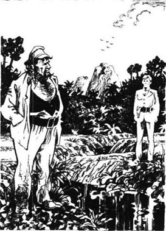
不一会儿，吉姆把村民留在身后，独自走过来。布朗沿着小河向他走去。他立即就知道，他和吉姆永远都不会相互理解。吉姆干净的白衣服、诚实的眼睛和自信的表情立即引起了布朗的憎恨。两个性格迥异的人隔着一条泥泞的小河交谈起来。大多数时候是吉姆在听，布朗字斟句酌地说。他对吉姆的过去一无所知，但他很善于发现一个人灵魂中的弱点，很不幸，他找到了对付吉姆的办法。
“你不能怪我昨晚开枪打死那个村民！”他喊道，“如果你不得不在黑暗中保住自己的命，就不会在乎会有多少人死掉，对吗？我知道我以前做过错事，但你呢？你为什么要藏在这里？你比我强不到哪儿去！别当个懦夫！你们的人是我们的两百倍之多。要么来和我们对阵，要么放我们走！”
吉姆脸色阴沉。他沉默良久，最后说：“好吧，如果你保证离开海岸，我们就放你们走，只要你们不先开火，我们就不动手。”说完他转身走了。
谈话结束了，吉姆回到村子与多拉曼和头领们商谈。有的人怀疑是否应该放这些白人走。“他们是残酷、邪恶的强盗，还杀了我们的一个人！”他们喊着，“我们应该杀了他们！”
但吉姆轻声说：“他们当然做过恶事；但他们并不走运。人有时会做坏事，但并不因此就完全是个坏人。最好放他们一条生路。”他停顿了一下，接着说，“我给过你们错误的建议吗？相信我。我愿意用性命担保，让这些白人离开不会伤害到你们。”
头领们各抒己见。多数人只说：“我们相信图安吉姆，他怎么说我们就怎么做。”
他们就这样达成了一致。布朗和他的人获准下山回到他们的小船上，从小河进入大河。
当晚，吉姆让坦比坦沿河而下给戴恩·沃里斯送个信。“告诉他，白人走的时候，让他的手下一定不要开枪。这是我们的协定。”
“这是一条重要消息，”坦比坦说，“让我带个信物给戴恩·沃里斯吧，好让他知道这是您的吩咐。”
吉姆自从来到帕图桑就一直带着斯坦给的银戒指。每个人都知道这枚戒指，它是多拉曼很久以前给斯坦的礼物。吉姆从手上摘下戒指，交给坦比坦，作为给戴恩·沃里斯的信物。
第二天早晨，吉姆站在王公寨子的栅栏外，看着布朗和他的人在灰色的浓雾中离开帕图桑。但心怀鬼胎的科尼利厄斯就在布朗的小船上，藏在船帆下面。布朗没有杀掉吉姆让科尼利厄斯感到失望，于是他决定换一种方式去报复。他答应为布朗指一条小河，它通往河流深处的小岛，多拉曼的儿子带着人在那儿的独木舟里埋伏。布朗对此自然是求之不得，他看到为自己复仇的机会来了。戴恩·沃里斯带着人和坦比坦一起守着这条河，谁也没有想到会有人从身后的小河攻打他们。布朗他们开了枪，好几个当地人倒下了，戴恩·沃里斯也倒下了，他的头部中了弹。剩下的人害怕地乱喊乱叫，纷纷落荒而逃。白人强盗再也没有在帕图桑出现，据说一个月后他们的船在印度洋沉没了。
科尼利厄斯也死了。坦比坦在岛上看见他，明白他做了些什么。如果没有知情人告密，谁都发现不了这条狭窄的河。科尼利厄斯想溜走，但坦比坦一刀杀了他。之后，坦比坦赶紧回到独木舟上，去向他的主人报告噩耗。
吉姆听后勃然大怒。他想追击这伙强盗，并下令汇集人手和船只，但坦比坦有些犹豫。
“原谅我，图安，”他惭愧地说，“但作为您的仆人，我现在去村民中间会有危险。”
这时吉姆意识到，这是一个可怕的事实。他从一个世界逃走，而现在他亲手创建的新的世界正在崩塌。他如同石像般默默地坐着，此时，坦比坦在说着打起来该如何，女孩则在谈论危险。谁知道吉姆在想些什么呢？我想他就是在这个时候写的那张纸条——他想写给某个人——但他却无法把这条消息写完。孤独感笼罩着他。人们把生命托付于他，却永远无法理解他。
与此同时，村子笼罩在悲痛和愤怒中，族长儿子的尸体被独木舟送了回来。多拉曼看着死去的儿子，慢慢地把吉姆的银戒指从儿子冰冷、僵硬的手指上脱下来。人们看到那枚熟悉的戒指，惊恐地叫了起来。多拉曼突然像一只受伤的动物一样爆发出一声大吼——那是悲痛和愤怒的哭喊。然后是一片沉默。
大约在这个时候，吉姆离开了他的屋子朝河边走去。“是结束这些的时候了。”他说。
女孩跟着他，喊着：“你不去开战吗？”
“没有理由开战。”他回答。
“你不逃走吗？”她又喊道。
“无路可逃了。”他说。
“那你要走了吗？你难道不记得你答应过永远都不离开我？”
“够了，可怜的女孩，”他回答说，“即便我留下来，也不值得你拥有了。”
她向他跑去，一边痛哭，一边抱住他，“我会这样搂着你！你是我的！”
吉姆挣脱开，注视着她好一会儿，然后跑向水边。他跳进一只独木舟和坦比坦离开了，女孩大声喊着：“你不守信用！”
“原谅我！”他大声说。
“我永远都不原谅你！”她回答，“永远都不！”
吉姆来到多拉曼的寨子，人们哭泣着，不知所措。他们分成两列，怀着敬畏让他进去。他慢慢地从人群中间走过，径直走到老族长面前，老族长还坐在他常坐的椅子上，膝上放着一把枪。多拉曼的妻子伤心地俯在儿子盖了白布的尸体上。吉姆把布揭开，看了看他死去的朋友，然后一言不发地放下来。过了一小会儿，他轻声说：“这件事是我的责任。我很难过，我来这里，没有带武器，我准备好了。”
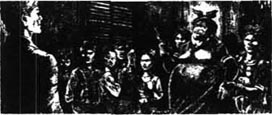
人们把肥胖的老人从椅子上扶起来，吉姆曾骄傲地戴在手上的那枚银戒指落到了地上。多拉曼盯着僵直地站在他面前的吉姆，脸上充满极端痛苦和愤怒的神情。然后，他直直地看着吉姆，举枪打向儿子的朋友的胸膛。吉姆骄傲、英勇地注视着周围所有凝视着他的面孔，然后，一只手捂着嘴，向前倒地死了。
这就是结局。他就这么神秘地消失了，被人忘却了，这或许过于浪漫。在最后短暂的一瞬间，他或许看清了他的机会，就像一位东方的新娘一样等着他。他离开了爱着他的、活着的女人，去和想象中的荣誉和责任的幽魂结合。我想知道，他现在得到幸福了吗？我们应当知道；因为他是我们中的一员。追根究底，我信任他难道错了吗？谁知道呢？他走了，而那个可怜的女孩在斯坦家里过着寡言少语、凝滞的生活。斯坦看上去老了很多，他也感到自己老了。他时常伤感地指着他的蝴蝶说，他“正在准备离开这一切”。
ACTIVITIES: Before Reading
ACTIVITIES
Before Reading
1．Read the story introduction on the first page of the book. What do you know now about Jim? Choose T (True) or F (False) for each of these sentences.
1) Jim is delighted to become a sailor. T/F
2) He is made captain of the Patna. T/F
3) He always does his duty as a brave man. T/F
4) No one believes in Jim after the accident. T/F
5) Later on, Jim tells his story to his friends. T/F
6) Jim goes to live in south-east Asia. T/F
2．Can you guess what happens to Jim in the story? Circle Y (Yes) or N (No) for each of these possibilities.
1) When the accident happens, Jim...
a) hesitates too long before giving an order. Y/N
b) saves himself first. Y/N
c) kills someone. Y/N
d) escapes from a ship that is about to sink. Y/N
e) leaves drowning men to die in the sea. Y/N
2) In the search for his lost honour, Jim...
a) discovers he is brave after all. Y/N
b) becomes even more disappointed with himself. Y/N
c) has a great adventure. Y/N
d) ends his life, friendless and unloved. Y/N
e) is considered a hero by all around him. Y/N
ACTIVITIES: While Reading
ACTIVITIES
While Reading
1．Read Chapter 1, and answer these questions.
1) Why was Jim popular in the Eastern ports?
2) Why do you think Jim didn't want people to know his other name?
3) Who called him Lord Jim?
4) What was Jim's family like?
5) What happened one stormy night on the training ship?
6) Where was the Patna going, and why?
7) What do you think happened to the Patna at the end of Chapter 1, and what do you think will happen next?
2．Read Chapters 2 and 3. Who said this, and to whom? Who or what were they talking about?
1) 'I didn't think of danger just then.'
2) 'Don't be too quick to judge him.'
3) 'We should put an end to this now.'
4) 'I won't let anyone call me names outside this court.'
5) 'It is—hell.'
6) 'Do you think you can?'
7) 'Nothing could save them!'
8) 'I'm going to get away.'
9) 'It seems you did.'
10) 'I'd jumped into an everlasting deep hole...'
3．Before you read Chapter 4, what do you think of Jim's actions so far? Think about or discuss these questions.
1) What was Jim guilty of?
2) Were there any good reasons for what he did?
3) Should he be punished? If so, how? If not, why not?
4) Was anyone else more at fault than Jim? If so, who, and how should they be punished?
5) Do you think Jim is brave, or cowardly, or a bit of both?
4．Read Chapters 4 and 5. Are these sentences true (T) or false (F)? Rewrite the false sentences with the correct information.
1) The inquiry court decided not to punish Jim in any way.
2) A man called Chester offered Jim a job on a guano island.
3) Marlow promised Jim a job on his own ship.
4) Jim always left his job if the Patna was mentioned.
5) Stein was scornful of Jim's problem and refused to help.
6) In Jim's time, most people in the East knew Patusan well.
7) Stein sent Jim to Patusan as manager of his trading-post.
8) Marlow was not sure how Jim's character would develop.
9) Patusan was a safe place because of the Sultan's uncle, who controlled the area and who was kind to the local Malays.
10) Jim was planning to stay in Patusan for a very short time.
5．Read Chapters 6 and 7. Choose the best question-word for these questions, and then answer them.
Who/Why
1) ... was Jim happy with his work in Patusan?
2) ... were Rajah Allang, Doramin, and Sherif Ali?
3) ... was the first person in Patusan to believe in Jim?
4) ... was Jim delighted after the attack on Sherif Ali?
5) ... did Jim move into the house at the trading-post?
6) ... saved Jim from being attacked in his bed?
7) ... did local people talk about the discovery of a jewel?
8) ... did the girl speak privately to Marlow?
9) ... did Marlow warn Jim about?
10) ... did Jim feel he had to stay in Patusan?
6．Before you read Chapter 8 (The end of the story), can you guess what happens? Choose some of these ideas.
1) After a few years Jim returns to England and his family.
2) Jim lives to an honourable old age.
3) He meets a sudden, but honourable death.
4) He is killed by someone he thinks is a friend.
5) He leaves Jewel for another woman.
6) He does something shameful and cowardly.
7) Something happens that destroys the natives' trust in him.
7．Read Chapter 8, and answer these questions.
1) Why did Captain Brown go to Patusan?
2) What was Kassim's plan?
3) What was Cornelius's advice to Brown, and why?
4) Why did Jim allow Brown and his men to leave Patusan?
5) How and why did Cornelius die?
6) Why did Jim offer himself to Doramin for punishment?
ACTIVITIES: After Reading
ACTIVITIES
After Reading
1．Who's who? Match the characters to their descriptions, and then choose the opinion of Jim that best fits that character.
| Marlow | a successful German trader |
| Stein | one of the young Sultan's uncles |
| Chester | Cornelius's step-daughter |
| Rajah Allang | the former trading-post manager |
| Doramin | a West Australian trader |
| Jewel | the storyteller |
| Captain Brown | an old Malay friend of Stein's |
| Cornelius | an evil seaman |
1) 'He promised never to leave me, and now he's gone! He's strong, he's fearless, but he's unfaithful!'
2) 'I knew he was no good. Once a coward, always coward! Why didn't he take the job I offered him?'
3) 'Did he achieve greatness? I think he did, in the end. Was I right to believe in him? I still don't really know.'
4) 'Why did I ever trust the white man? My son is dead because of him. The Tuan has broken his promise to us and he must die!'
5) 'How I hate him! He's taken my job and the girl, and now he lives in my house! But I'll get my revenge on him in the end!'
6) 'Poor young man! He followed the dream, that's true, but where did it lead him? Such a waste of a life!'
7) 'I've got to be careful with Tuan Jim. He could attack me, and then I'd lose everything—my land, money, women, servants...'
8) 'I'm sure there's some dark secret in his past. Why else would he bury himself in a hole like this?'
2．Here is a newspaper report about the Patna. Put the parts of sentences in the right order, and join them with the linking words, to make a paragraph of five sentences. Start with number 4.
and / as / by / however / that / when / which
PATNA OFFICERS FOUND GUILTY
1) The Patna was sailing across the Indian Ocean to Mecca, with eight hundred passengers on board,
2) ______ fortunately all the passengers were rescued by a French ship.
3) This damaged it so badly
4) At the courthouse today the officers of the Patna were found guilty of forgetting their duty,
5) ______ knocked a hole in the metal wall of the ship.
6) ______, the Patna did not sink,
7) ______ there were not enough lifeboats for everyone on board,
8) ______ leaving the ship in a moment of danger.
9) ______ the officers were sure the Patna would sink.
10) ______ suddenly it hit something in the water,
11) they decided to save their own lives, and escaped in a small rowing-boat.
3．Jim went to see Stein to discuss the job in Patusan (see Chapter 5). What did they talk about? Complete Jim's side of their conversation.
STEIN: Well, young man, are you interested in this job?
JIM: ______
STEIN: There's no need to thank me. It's not an easy job I'm offering you. Patusan is a dangerous place, you know.
JIM: ______
STEIN: Of course I trust you. Marlow speaks very highly of you. Now, to business. Here is a letter for Cornelius.
JIM: ______
STEIN: Yes, it is. And he'll be angry with you for taking his job. So be careful of him—and also of Rajah Allang, one of the local leaders, who will probably try to kill you.
JIM: ______
STEIN: You're very confident! However, you may need help.
JIM: ______
STEIN: The best person would be Doramin, one of the Malay chiefs. If you show him this silver ring, he'll help you.
JIM: ______
STEIN: Oh yes, he'll know it—he gave it to me!
JIM: ______
STEIN: Yes, a good friend. We fought side by side in battle. I'm hoping things are all right in Patusan, but I've had no news for over a year. And I hear the river is closed...
JIM: ______
STEIN: I'm sure you will, young man. I'm sure you will.
4．What was the history of Stein's silver ring? Use these notes to describe why the ring passed from one owner to the next.
1) From Doramin to Stein many years earlier
2) From Stein to Jim before he left for Patusan
3) From Jim to Dain Waris (sent with a message carried by Tamb'Itam)
4) From Dain Waris's dead body, back to Doramin
5．What were the two messages that Jim never finished? Perhaps the first (see the end of Chapter 7) was to his family, and the second (see the beginning of Chapter 8) was to Marlow. Complete them with words from the story.
1) Tell them I am all ______. Tell them I am ______ and well, and doing ______ that I love and can be ______ of. Not a ______ goes by without my ______ about them, but I can never ______ now. My ______ is here, where I am needed, and ______, and respected. Tell them I am happy, if ______ means doing your ______ and making life ______ for other people.
2) An awful thing has happened. Because of my ______, Brown and his men have ______ Dain Waris and several other ______. I am to ______ for this, and I will have to pay the ______. There is no ______ for me. No one can ______ me now. I've had my ______, and my ______ is over. I must now, at once, go to Doramin's ______ and ______ myself to him. It is the ______ of everything.
6．Here are three things that Jim said at different points in the story. Can you explain what he was talking about? Try to use some of these words in your explanations.
conscience, coward, duty, faithful, forgive, guilty, hero, honour, respect, shame, soul, suffer, trust
1) 'Ah! What a chance I missed! My God! What a chance I missed!'
(Jim to Marlow, Chapter 3)
2) 'Well, now I know I am all right, anyway.'
(Jim to Marlow, Chapter 6)
3) 'If I stayed, I would not be worth having.'
(Jim to Jewel, Chapter 8)
7．Imagine that Jim had time to ask Marlow's advice after Dain Waris's death, in Chapter 8. Here are four possible pieces of advice from Marlow. Which plan do you think Marlow would have advised? Which would you have suggested? Why?
1) You're lucky enough to have a woman who loves you. Take her with you, and escape down the river. The villagers won't notice you've gone until it's too late to catch you. You and Jewel can start a new life together in another country...
2) You have most of the guns and ammunition in your house. Together, you, Jewel and Tamb'Itam can fight off any attack by the natives. They'll soon realize you are still in control. Stay in your house, and watch out for trouble!
3) You'll have to talk to Doramin, but make sure you have a gun in your hand when you visit him, and get Tamb'Itam to watch your back. Tell the old man you are deeply sorry about his son, but you are not to blame for his death. It was Cornelius who was responsible for the cowardly attack on Dain Waris and his men.
4) Tell Tamb'Itam to collect men and boats at once. Your only chance now is to chase and catch the robbers, then you can bring them back to Patusan, and Doramin can take his revenge on them personally.
8．Think about or discuss these questions, giving reasons for your opinions.
1) How can bravery and cowardice be measured? Which of Jim's actions were brave, in your opinion, and which were cowardly?
2) All his life Jim was very conscious of his duty. Which duty do you think should come first?
· to your country
· to your family and friends
· to your own ideas of honour
· to society's ideas of honour
· to your boyfriend/girlfriend/husband/wife
封底
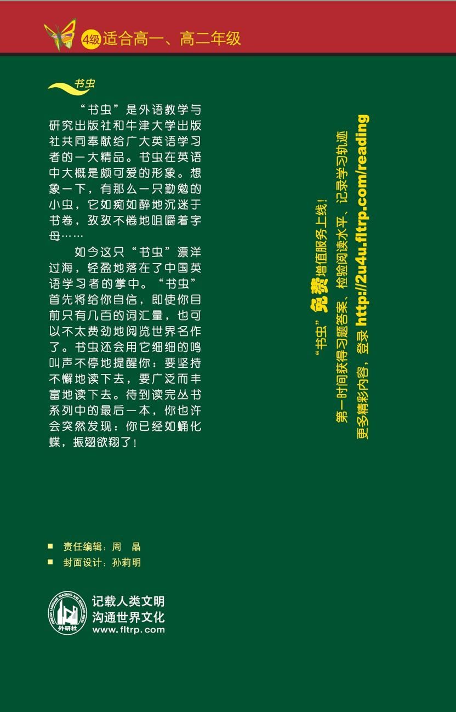